<!doctype html><html lang="da"><head><meta charset="utf-8"><meta name="viewport" content="width=device-width,initial-scale=1"><meta name="referrer" content="no-referrer"><title>Kapitel 4 – Danmark og omverdenen</title><link rel="stylesheet" href="assets/style.css"></head><body><header class="topbar"><div class="tools"><a class="brand" href="index.html">Indfødsretsprøven</a><span class="tool-label">TTS</span><div class="choice"><label><input type="radio" name="tts" value="browser">Browser</label><label><input type="radio" name="tts" value="google">Google</label></div><label class="tool-label voice-label" for="voice">Stemme</label><select id="voice"><option value="">Dansk standard</option></select><label class="tool-label" for="rate">Tempo <output id="rateOut">0.9×</output></label><input id="rate" type="range" min="0.6" max="1.3" step="0.1" value="0.9"></div></header><div class="layout"><nav class="side"><a href="index.html">← Alle kapitler</a><a href="#s121-0">Kapitel 4 Danmark og omverdenen</a><a href="#s121-1">4.1 INDLEDNING</a><a href="#s122-2">4.2 DANMARK I EUROPA</a><a href="#s122-3">4.2.1 DEN EUROPÆISKE UNION</a><a href="#s130-4">4.2.2 EUROPARÅDET</a><a href="#s131-5">4.3 DANMARKS GLOBALE SAMARBEJDE</a><a href="#s131-6">4.3.1 FN (DE FORENEDE NATIONER)</a><a href="#s134-7">4.3.2 INTERNATIONALT SAMARBEJDE OM UDVIKLING</a><a href="#s136-8">4.4 DANMARKS UDENRIGS- OG SIKKERHEDSPOLITIK</a><a href="#s136-9">4.4.1 UDENRIGSPOLITISK AKTIVISME EFTER DEN KOLDE KRIG (1990-2022)</a><a href="#s137-10">4.4.2 INDSATSER EFTER TERRORANGREBET PÅ USA I 2001</a><a href="#s139-11">4.4.3 NYT FOKUS PÅ DANSK TERRITORIALFORSVAR (2022- )</a><a href="#s142-12">4.4.4 RIGSFÆLLESSKABET, GRØNLAND OG ARKTIS I DANSK UDEN RIGSPOLITIK</a></nav><main><div class="eyebrow">Kapitel 4</div><h1>Danmark og omverdenen</h1><div class="audio-box"><h2>Officiel lydbog</h2><div><strong>Danmark og omverdenen</strong><audio controls preload="none" src="assets/audio/ip-kapitel-4.mp3">Din browser understøtter ikke audio.</audio><a href="assets/audio/ip-kapitel-4.mp3" download>Download MP3</a></div></div><div class="page">Side 121</div><h2 id="s121-0">Kapitel 4 Danmark og omverdenen</h2><h2 id="s121-1">4.1 INDLEDNING</h2><p class="para"><span class="sentence">Omfanget af det internationale samarbejde er vokset siden afslutningen på 2.<button class="speak" type="button" data-text="Omfanget af det internationale samarbejde er vokset siden afslutningen på 2." title="Ouvir esta frase" aria-label="Ouvir esta frase">🔊</button></span> <span class="sentence">Verdenskrig.<button class="speak" type="button" data-text="Verdenskrig." title="Ouvir esta frase" aria-label="Ouvir esta frase">🔊</button></span> <span class="sentence">Ikke mindst ud fra et stærkt ønske om at undgå nye krige.<button class="speak" type="button" data-text="Ikke mindst ud fra et stærkt ønske om at undgå nye krige." title="Ouvir esta frase" aria-label="Ouvir esta frase">🔊</button></span> <span class="sentence">Fremtidige konflikter mellem landene skulle forebygges.<button class="speak" type="button" data-text="Fremtidige konflikter mellem landene skulle forebygges." title="Ouvir esta frase" aria-label="Ouvir esta frase">🔊</button></span> <span class="sentence">Der skulle i stedet samarbejdes og findes fredelige løsninger.<button class="speak" type="button" data-text="Der skulle i stedet samarbejdes og findes fredelige løsninger." title="Ouvir esta frase" aria-label="Ouvir esta frase">🔊</button></span> <span class="sentence">Danmark deltager i vidt omfang i dette samarbejde.<button class="speak" type="button" data-text="Danmark deltager i vidt omfang i dette samarbejde." title="Ouvir esta frase" aria-label="Ouvir esta frase">🔊</button></span> </p><p class="para"><span class="sentence">Der har været – og er fortsat – enighed blandt de fleste af Folketingets partier om, at deltagelsen overvejende fremmer danske politiske og økonomiske inte resser samt beskytter landets sikkerhed.<button class="speak" type="button" data-text="Der har været – og er fortsat – enighed blandt de fleste af Folketingets partier om, at deltagelsen overvejende fremmer danske politiske og økonomiske inte resser samt beskytter landets sikkerhed." title="Ouvir esta frase" aria-label="Ouvir esta frase">🔊</button></span> <span class="sentence">Det har givet Danmark indflydelse på forhold, der rækker ud over landets grænser.<button class="speak" type="button" data-text="Det har givet Danmark indflydelse på forhold, der rækker ud over landets grænser." title="Ouvir esta frase" aria-label="Ouvir esta frase">🔊</button></span> <span class="sentence">Men beslutningerne i disse inter nationale organisationer er samtidig med til at fastlægge rammerne for det danske samfund.<button class="speak" type="button" data-text="Men beslutningerne i disse inter nationale organisationer er samtidig med til at fastlægge rammerne for det danske samfund." title="Ouvir esta frase" aria-label="Ouvir esta frase">🔊</button></span> <span class="sentence">Det internationale og især det europæiske samarbejde har på denne måde stor betydning for Danmark.<button class="speak" type="button" data-text="Det internationale og især det europæiske samarbejde har på denne måde stor betydning for Danmark." title="Ouvir esta frase" aria-label="Ouvir esta frase">🔊</button></span> </p><p class="para"><span class="sentence">På europæisk plan drejer det sig især om EU.<button class="speak" type="button" data-text="På europæisk plan drejer det sig især om EU." title="Ouvir esta frase" aria-label="Ouvir esta frase">🔊</button></span> <span class="sentence">Samarbejdet i EU er nemlig særligt omfattende og spiller en stor rolle for Danmark.<button class="speak" type="button" data-text="Samarbejdet i EU er nemlig særligt omfattende og spiller en stor rolle for Danmark." title="Ouvir esta frase" aria-label="Ouvir esta frase">🔊</button></span> <span class="sentence">Desuden er Danmark blandt andet medlem af FN, NATO og Europarådet.<button class="speak" type="button" data-text="Desuden er Danmark blandt andet medlem af FN, NATO og Europarådet." title="Ouvir esta frase" aria-label="Ouvir esta frase">🔊</button></span> <span class="sentence">Danmark samarbejder også med de øvrige nordiske lande: Sverige, Norge, Finland og Island.<button class="speak" type="button" data-text="Danmark samarbejder også med de øvrige nordiske lande: Sverige, Norge, Finland og Island." title="Ouvir esta frase" aria-label="Ouvir esta frase">🔊</button></span> <span class="sentence">Det foregår især i Nordisk Råd og Nordisk Ministerråd.<button class="speak" type="button" data-text="Det foregår især i Nordisk Råd og Nordisk Ministerråd." title="Ouvir esta frase" aria-label="Ouvir esta frase">🔊</button></span> </p><div class="page">Side 122</div><h2 id="s122-2">4.2 DANMARK I EUROPA</h2><h3 id="s122-3">4.2.1 DEN EUROPÆISKE UNION</h3><p class="para"><span class="sentence">De første skridt i Den Europæiske Unions historie var Det Europæiske Kul- og Stålfællesskab, som blev oprettet i 1952 af seks europæiske lande.<button class="speak" type="button" data-text="De første skridt i Den Europæiske Unions historie var Det Europæiske Kul- og Stålfællesskab, som blev oprettet i 1952 af seks europæiske lande." title="Ouvir esta frase" aria-label="Ouvir esta frase">🔊</button></span> <span class="sentence">Ud over ønsket om at understøtte fred og samarbejde mellem landene var et formål også at genrejse Europa økonomisk og socialt efter krigens ødelæggelser.<button class="speak" type="button" data-text="Ud over ønsket om at understøtte fred og samarbejde mellem landene var et formål også at genrejse Europa økonomisk og socialt efter krigens ødelæggelser." title="Ouvir esta frase" aria-label="Ouvir esta frase">🔊</button></span> <span class="sentence">Samtidig var det politiske verdenskort ændret.<button class="speak" type="button" data-text="Samtidig var det politiske verdenskort ændret." title="Ouvir esta frase" aria-label="Ouvir esta frase">🔊</button></span> <span class="sentence">Europa var ikke længere verdens magt centrum, og derfor skulle de enkelte lande styrkes ved at samarbejde mere.<button class="speak" type="button" data-text="Europa var ikke længere verdens magt centrum, og derfor skulle de enkelte lande styrkes ved at samarbejde mere." title="Ouvir esta frase" aria-label="Ouvir esta frase">🔊</button></span> </p><p class="para"><span class="sentence">Nogle få år senere besluttede de seks lande at gå et skridt videre.<button class="speak" type="button" data-text="Nogle få år senere besluttede de seks lande at gå et skridt videre." title="Ouvir esta frase" aria-label="Ouvir esta frase">🔊</button></span> <span class="sentence">Kul- og Stål fællesskabet blev i 1958 udvidet med Det Europæiske Økonomiske Fællesskab og Det Europæiske Atomenergifællesskab.<button class="speak" type="button" data-text="Kul- og Stål fællesskabet blev i 1958 udvidet med Det Europæiske Økonomiske Fællesskab og Det Europæiske Atomenergifællesskab." title="Ouvir esta frase" aria-label="Ouvir esta frase">🔊</button></span> <span class="sentence">Disse tre fællesskaber blev senere til De Europæiske Fællesskaber (EF).<button class="speak" type="button" data-text="Disse tre fællesskaber blev senere til De Europæiske Fællesskaber (EF)." title="Ouvir esta frase" aria-label="Ouvir esta frase">🔊</button></span> <span class="sentence">Samarbejdet blev nu et bredere økonomisk samarbejde.<button class="speak" type="button" data-text="Samarbejdet blev nu et bredere økonomisk samarbejde." title="Ouvir esta frase" aria-label="Ouvir esta frase">🔊</button></span> <span class="sentence">Det fik især som formål at afskaffe hindringer for indbyrdes handel mellem landene og dermed etablere et mere fælles marked.<button class="speak" type="button" data-text="Det fik især som formål at afskaffe hindringer for indbyrdes handel mellem landene og dermed etablere et mere fælles marked." title="Ouvir esta frase" aria-label="Ouvir esta frase">🔊</button></span> </p><p class="para"><span class="sentence">I 1993 trådte EU’s indre marked i kraft.<button class="speak" type="button" data-text="I 1993 trådte EU’s indre marked i kraft." title="Ouvir esta frase" aria-label="Ouvir esta frase">🔊</button></span> <span class="sentence">Det gør, at varer, tjenesteydelser, personer og kapital kan bevæge sig endnu mere frit mellem medlemslandene end tidli gere.<button class="speak" type="button" data-text="Det gør, at varer, tjenesteydelser, personer og kapital kan bevæge sig endnu mere frit mellem medlemslandene end tidli gere." title="Ouvir esta frase" aria-label="Ouvir esta frase">🔊</button></span> <span class="sentence">Samme år skiftede EF navn til EU, Den Europæiske Union.<button class="speak" type="button" data-text="Samme år skiftede EF navn til EU, Den Europæiske Union." title="Ouvir esta frase" aria-label="Ouvir esta frase">🔊</button></span> <span class="sentence">Navnefor andringen afspejlede, at samarbejdet, som hidtil havde været et samarbejde om økonomiske spørgsmål som handel, landbrug og fiskeri, blev udvidet med en bredere vifte af politiske samarbejdsområder.<button class="speak" type="button" data-text="Navnefor andringen afspejlede, at samarbejdet, som hidtil havde været et samarbejde om økonomiske spørgsmål som handel, landbrug og fiskeri, blev udvidet med en bredere vifte af politiske samarbejdsområder." title="Ouvir esta frase" aria-label="Ouvir esta frase">🔊</button></span> </p><p class="para"><span class="sentence">I dag består EU af 27 medlemslande med i alt cirka 450 millioner indbyggere.<button class="speak" type="button" data-text="I dag består EU af 27 medlemslande med i alt cirka 450 millioner indbyggere." title="Ouvir esta frase" aria-label="Ouvir esta frase">🔊</button></span> <span class="sentence">Landene er oplistet nedenfor efter det år, de indtrådte i samarbejdet.<button class="speak" type="button" data-text="Landene er oplistet nedenfor efter det år, de indtrådte i samarbejdet." title="Ouvir esta frase" aria-label="Ouvir esta frase">🔊</button></span> </p><p class="para"><span class="sentence">1958: Stiftende medlemmer: Frankrig, Tyskland, Italien, Belgien, Holland og<button class="speak" type="button" data-text="1958: Stiftende medlemmer: Frankrig, Tyskland, Italien, Belgien, Holland og" title="Ouvir esta frase" aria-label="Ouvir esta frase">🔊</button></span> </p><p class="para"><span class="sentence">Luxembourg 1973: Danmark og Irland 1981: Grækenland 1986: Spanien og Portugal 1995: Østrig, Finland og Sverige 2004: Cypern, Tjekkiet, Estland, Letland, Litauen, Ungarn, Malta, Polen, Slovakiet<button class="speak" type="button" data-text="Luxembourg 1973: Danmark og Irland 1981: Grækenland 1986: Spanien og Portugal 1995: Østrig, Finland og Sverige 2004: Cypern, Tjekkiet, Estland, Letland, Litauen, Ungarn, Malta, Polen, Slovakiet" title="Ouvir esta frase" aria-label="Ouvir esta frase">🔊</button></span> </p><p class="para"><span class="sentence">og Slovenien 2007: Bulgarien og Rumænien 2013: Kroatien<button class="speak" type="button" data-text="og Slovenien 2007: Bulgarien og Rumænien 2013: Kroatien" title="Ouvir esta frase" aria-label="Ouvir esta frase">🔊</button></span> </p><p class="para"><span class="sentence">Desuden indtrådte Storbritannien i EU sammen med Danmark og Irland i 1973, men landet forlod samarbejdet igen i 2020.<button class="speak" type="button" data-text="Desuden indtrådte Storbritannien i EU sammen med Danmark og Irland i 1973, men landet forlod samarbejdet igen i 2020." title="Ouvir esta frase" aria-label="Ouvir esta frase">🔊</button></span> </p><div class="page">Side 123</div><figure>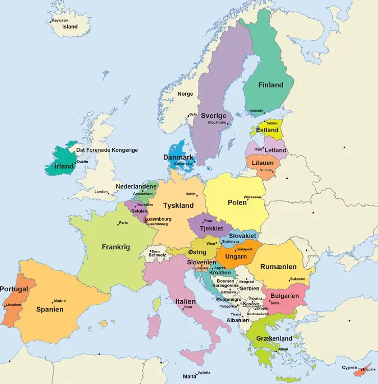</figure><p class="para"><span class="sentence">EU’s 27 medlemslande.<button class="speak" type="button" data-text="EU’s 27 medlemslande." title="Ouvir esta frase" aria-label="Ouvir esta frase">🔊</button></span> <span class="sentence">Grafik: EU.<button class="speak" type="button" data-text="Grafik: EU." title="Ouvir esta frase" aria-label="Ouvir esta frase">🔊</button></span> </p><p class="para"><span class="sentence">EU’s formål er at løse fælles europæiske problemer.<button class="speak" type="button" data-text="EU’s formål er at løse fælles europæiske problemer." title="Ouvir esta frase" aria-label="Ouvir esta frase">🔊</button></span> <span class="sentence">Unionen skal styrke samar bejdet på områder, der bedst klares af EU’s medlemslande i fællesskab.<button class="speak" type="button" data-text="Unionen skal styrke samar bejdet på områder, der bedst klares af EU’s medlemslande i fællesskab." title="Ouvir esta frase" aria-label="Ouvir esta frase">🔊</button></span> <span class="sentence">EU’s generelle målsætninger er at fremme økonomisk og social udvikling, at styrke Europas rolle i verden, at styrke beskyttelsen af de europæiske borgeres rettig heder og interesser og at sikre frihed, sikkerhed og retfærdighed.<button class="speak" type="button" data-text="EU’s generelle målsætninger er at fremme økonomisk og social udvikling, at styrke Europas rolle i verden, at styrke beskyttelsen af de europæiske borgeres rettig heder og interesser og at sikre frihed, sikkerhed og retfærdighed." title="Ouvir esta frase" aria-label="Ouvir esta frase">🔊</button></span> </p><p class="para"><span class="sentence">EU-landene samarbejder i dag på næsten alle samfundsområder.<button class="speak" type="button" data-text="EU-landene samarbejder i dag på næsten alle samfundsområder." title="Ouvir esta frase" aria-label="Ouvir esta frase">🔊</button></span> <span class="sentence">For eksempel er der etableret en økonomisk og monetær union (ØMU’en).<button class="speak" type="button" data-text="For eksempel er der etableret en økonomisk og monetær union (ØMU’en)." title="Ouvir esta frase" aria-label="Ouvir esta frase">🔊</button></span> <span class="sentence">Herunder har 20 medlemslande en fælles valuta (euroen).<button class="speak" type="button" data-text="Herunder har 20 medlemslande en fælles valuta (euroen)." title="Ouvir esta frase" aria-label="Ouvir esta frase">🔊</button></span> <span class="sentence">EU-samarbejdet omfatter også en fælles udenrigs- og sikkerhedspolitik.<button class="speak" type="button" data-text="EU-samarbejdet omfatter også en fælles udenrigs- og sikkerhedspolitik." title="Ouvir esta frase" aria-label="Ouvir esta frase">🔊</button></span> <span class="sentence">Desuden er der et politisamar bejde, samarbejde om asyl- og flygtningepolitik samt det såkaldte Schengensamarbejde, hvis formål er at skabe et fælles område uden indre grænser, men med en fælles ydre grænse.<button class="speak" type="button" data-text="Desuden er der et politisamar bejde, samarbejde om asyl- og flygtningepolitik samt det såkaldte Schengensamarbejde, hvis formål er at skabe et fælles område uden indre grænser, men med en fælles ydre grænse." title="Ouvir esta frase" aria-label="Ouvir esta frase">🔊</button></span> </p><p class="para"><span class="sentence">Schengen-samarbejdet betyder, at landene i udgangspunktet har fjernet personkontrollen ved grænserne inden for Schengenområdet og lavet fælles visumregler for borgere fra en række lande uden for EU.<button class="speak" type="button" data-text="Schengen-samarbejdet betyder, at landene i udgangspunktet har fjernet personkontrollen ved grænserne inden for Schengenområdet og lavet fælles visumregler for borgere fra en række lande uden for EU." title="Ouvir esta frase" aria-label="Ouvir esta frase">🔊</button></span> <span class="sentence">I EU samarbejder man også om miljøbeskyttelse, sociale forhold, beskæftigelse, arbejdsmarked,<button class="speak" type="button" data-text="I EU samarbejder man også om miljøbeskyttelse, sociale forhold, beskæftigelse, arbejdsmarked," title="Ouvir esta frase" aria-label="Ouvir esta frase">🔊</button></span> </p><div class="page">Side 124</div><p class="para"><span class="sentence">uddannelse, regional udvikling og udenrigspolitiske spørgsmål.<button class="speak" type="button" data-text="uddannelse, regional udvikling og udenrigspolitiske spørgsmål." title="Ouvir esta frase" aria-label="Ouvir esta frase">🔊</button></span> <span class="sentence">Men der er stor forskel på, hvor omfattende samarbejdet er på de enkelte områder.<button class="speak" type="button" data-text="Men der er stor forskel på, hvor omfattende samarbejdet er på de enkelte områder." title="Ouvir esta frase" aria-label="Ouvir esta frase">🔊</button></span> <span class="sentence">På nogle områder udarbejdes der fælles europæisk lovgivning.<button class="speak" type="button" data-text="På nogle områder udarbejdes der fælles europæisk lovgivning." title="Ouvir esta frase" aria-label="Ouvir esta frase">🔊</button></span> <span class="sentence">På andre områder nøjes EU med at understøtte medlemslandenes nationale politikker.<button class="speak" type="button" data-text="På andre områder nøjes EU med at understøtte medlemslandenes nationale politikker." title="Ouvir esta frase" aria-label="Ouvir esta frase">🔊</button></span> </p><p class="para"><span class="sentence">I EU-samarbejdet har medlemslandene givet EU noget af den magt, som før lå hos de nationale parlamenter og myndigheder.<button class="speak" type="button" data-text="I EU-samarbejdet har medlemslandene givet EU noget af den magt, som før lå hos de nationale parlamenter og myndigheder." title="Ouvir esta frase" aria-label="Ouvir esta frase">🔊</button></span> <span class="sentence">Samarbejdet i EU betyder, at der på nogle retsområder kan vedtages EU-lovgivning, der gælder direkte for borgerne i det enkelte medlemsland.<button class="speak" type="button" data-text="Samarbejdet i EU betyder, at der på nogle retsområder kan vedtages EU-lovgivning, der gælder direkte for borgerne i det enkelte medlemsland." title="Ouvir esta frase" aria-label="Ouvir esta frase">🔊</button></span> <span class="sentence">EU-reglerne har altså samme virkning som landets egen lovgivning.<button class="speak" type="button" data-text="EU-reglerne har altså samme virkning som landets egen lovgivning." title="Ouvir esta frase" aria-label="Ouvir esta frase">🔊</button></span> <span class="sentence">I dag træffes mange beslutninger i EU desuden ved såkaldte flertalsafgørelser.<button class="speak" type="button" data-text="I dag træffes mange beslutninger i EU desuden ved såkaldte flertalsafgørelser." title="Ouvir esta frase" aria-label="Ouvir esta frase">🔊</button></span> <span class="sentence">Det betyder, at et forslag kan vedtages, uden at samtlige medlemslande er enige.<button class="speak" type="button" data-text="Det betyder, at et forslag kan vedtages, uden at samtlige medlemslande er enige." title="Ouvir esta frase" aria-label="Ouvir esta frase">🔊</button></span> <span class="sentence">Et land kan med andre ord blive stemt ned, men alligevel være bundet af beslutningen.<button class="speak" type="button" data-text="Et land kan med andre ord blive stemt ned, men alligevel være bundet af beslutningen." title="Ouvir esta frase" aria-label="Ouvir esta frase">🔊</button></span> <span class="sentence">EU er organiseret via en række insti tutioner, som fungerer uafhængigt af medlemslandene.<button class="speak" type="button" data-text="EU er organiseret via en række insti tutioner, som fungerer uafhængigt af medlemslandene." title="Ouvir esta frase" aria-label="Ouvir esta frase">🔊</button></span> <span class="sentence">Det drejer sig især om Europa-Kommissionen, Europa-Parlamentet og EU-Domstolen.<button class="speak" type="button" data-text="Det drejer sig især om Europa-Kommissionen, Europa-Parlamentet og EU-Domstolen." title="Ouvir esta frase" aria-label="Ouvir esta frase">🔊</button></span> </p><p class="para"><span class="sentence">Et eksempel på en vedtaget EU-lov er databeskyttelsesforordningen, der oftest omtales som GDPR (General Data Protection Regulation).<button class="speak" type="button" data-text="Et eksempel på en vedtaget EU-lov er databeskyttelsesforordningen, der oftest omtales som GDPR (General Data Protection Regulation)." title="Ouvir esta frase" aria-label="Ouvir esta frase">🔊</button></span> <span class="sentence">Denne lov trådte i kraft i 2018 og stiller krav til, hvordan personoplysninger i EU-landene behandles.<button class="speak" type="button" data-text="Denne lov trådte i kraft i 2018 og stiller krav til, hvordan personoplysninger i EU-landene behandles." title="Ouvir esta frase" aria-label="Ouvir esta frase">🔊</button></span> <span class="sentence">Dette har haft stor betydning for danske virksomheder og organisationer, da der er kommet nye krav til, hvordan og hvor længe de må opbevare data om medlemmer og kunder samt krav om samtykke ved indtastning af oplysninger om privatpersoner.<button class="speak" type="button" data-text="Dette har haft stor betydning for danske virksomheder og organisationer, da der er kommet nye krav til, hvordan og hvor længe de må opbevare data om medlemmer og kunder samt krav om samtykke ved indtastning af oplysninger om privatpersoner." title="Ouvir esta frase" aria-label="Ouvir esta frase">🔊</button></span> <span class="sentence">En del både offentlige og private virksomheder ansætter medarbejdere til at sikre, at virksomhedernes GDPR-procedurer følges.<button class="speak" type="button" data-text="En del både offentlige og private virksomheder ansætter medarbejdere til at sikre, at virksomhedernes GDPR-procedurer følges." title="Ouvir esta frase" aria-label="Ouvir esta frase">🔊</button></span> </p><p class="para"><span class="sentence">EU-samarbejdet kan også omfatte forhold, som ikke fører til decideret EU-lov givning.<button class="speak" type="button" data-text="EU-samarbejdet kan også omfatte forhold, som ikke fører til decideret EU-lov givning." title="Ouvir esta frase" aria-label="Ouvir esta frase">🔊</button></span> <span class="sentence">I stedet er målet, at EU-landene skal lære af hinanden.<button class="speak" type="button" data-text="I stedet er målet, at EU-landene skal lære af hinanden." title="Ouvir esta frase" aria-label="Ouvir esta frase">🔊</button></span> <span class="sentence">Det kan ske ved, at landene i fællesskab formulerer målsætninger for bestemte politikområder og så rapporterer om, hvad man har gjort.<button class="speak" type="button" data-text="Det kan ske ved, at landene i fællesskab formulerer målsætninger for bestemte politikområder og så rapporterer om, hvad man har gjort." title="Ouvir esta frase" aria-label="Ouvir esta frase">🔊</button></span> <span class="sentence">Det kaldes også ’Den åbne koordina tionsmetode’.<button class="speak" type="button" data-text="Det kaldes også ’Den åbne koordina tionsmetode’." title="Ouvir esta frase" aria-label="Ouvir esta frase">🔊</button></span> <span class="sentence">Anbefalingerne drejer sig især om arbejdsmarkedspolitik, økono misk politik og socialpolitik.<button class="speak" type="button" data-text="Anbefalingerne drejer sig især om arbejdsmarkedspolitik, økono misk politik og socialpolitik." title="Ouvir esta frase" aria-label="Ouvir esta frase">🔊</button></span> <span class="sentence">Medlemsstaterne har ikke pligt til at gennemføre anbefalingerne, men de påvirker ofte medlemsstaternes politik.<button class="speak" type="button" data-text="Medlemsstaterne har ikke pligt til at gennemføre anbefalingerne, men de påvirker ofte medlemsstaternes politik." title="Ouvir esta frase" aria-label="Ouvir esta frase">🔊</button></span> </p><h3>DANMARK OG EU</h3><p class="para"><span class="sentence">På bestemte områder har EU fået adgang til at vedtage lovgivning, som Folke tinget ellers skulle vedtage.<button class="speak" type="button" data-text="På bestemte områder har EU fået adgang til at vedtage lovgivning, som Folke tinget ellers skulle vedtage." title="Ouvir esta frase" aria-label="Ouvir esta frase">🔊</button></span> <span class="sentence">EU har for eksempel adgang til at vedtage regler, som fjerner handelshindringer mellem medlemslandene.<button class="speak" type="button" data-text="EU har for eksempel adgang til at vedtage regler, som fjerner handelshindringer mellem medlemslandene." title="Ouvir esta frase" aria-label="Ouvir esta frase">🔊</button></span> <span class="sentence">Danmark har altså med sit medlemskab af EU afgivet noget af sin selvbestemmelsesret.<button class="speak" type="button" data-text="Danmark har altså med sit medlemskab af EU afgivet noget af sin selvbestemmelsesret." title="Ouvir esta frase" aria-label="Ouvir esta frase">🔊</button></span> <span class="sentence">Det giver den danske grundlov mulighed for.<button class="speak" type="button" data-text="Det giver den danske grundlov mulighed for." title="Ouvir esta frase" aria-label="Ouvir esta frase">🔊</button></span> <span class="sentence">Der stilles dog ganske strenge krav til at træffe sådan en beslutning.<button class="speak" type="button" data-text="Der stilles dog ganske strenge krav til at træffe sådan en beslutning." title="Ouvir esta frase" aria-label="Ouvir esta frase">🔊</button></span> <span class="sentence">Mindst 5/6 (det vil sige mindst 150) af Folketingets 179 medlemmer skal sige ja til Danmarks deltagelse i det internationale samar bejde, hvis det medfører, at Danmark afgiver national selvbestemmelse.<button class="speak" type="button" data-text="Mindst 5/6 (det vil sige mindst 150) af Folketingets 179 medlemmer skal sige ja til Danmarks deltagelse i det internationale samar bejde, hvis det medfører, at Danmark afgiver national selvbestemmelse." title="Ouvir esta frase" aria-label="Ouvir esta frase">🔊</button></span> <span class="sentence">Hvis færre end 150 medlemmer (men dog et simpelt flertal på 90) siger ja, skal der afholdes folkeafstemning om, hvorvidt Danmark skal deltage i det internationale samarbejde.<button class="speak" type="button" data-text="Hvis færre end 150 medlemmer (men dog et simpelt flertal på 90) siger ja, skal der afholdes folkeafstemning om, hvorvidt Danmark skal deltage i det internationale samarbejde." title="Ouvir esta frase" aria-label="Ouvir esta frase">🔊</button></span> </p><div class="page">Side 125</div><p class="para"><span class="sentence">Selvom meningsmålinger viser, at befolkningen helt overvejende er positive over for EU-medlemskabet, har den ofte været splittet i holdningen til, om EU skal omfatte flere politikområder, og om Danmark skal afskaffe sine EU-forbe hold.<button class="speak" type="button" data-text="Selvom meningsmålinger viser, at befolkningen helt overvejende er positive over for EU-medlemskabet, har den ofte været splittet i holdningen til, om EU skal omfatte flere politikområder, og om Danmark skal afskaffe sine EU-forbe hold." title="Ouvir esta frase" aria-label="Ouvir esta frase">🔊</button></span> <span class="sentence">Fra og med danskerne sagde ja til medlemskab af EF i 1972, har der været afholdt ni folkeafstemninger om ændringer i samarbejdet.<button class="speak" type="button" data-text="Fra og med danskerne sagde ja til medlemskab af EF i 1972, har der været afholdt ni folkeafstemninger om ændringer i samarbejdet." title="Ouvir esta frase" aria-label="Ouvir esta frase">🔊</button></span> <span class="sentence">Seks gange har et flertal af vælgerne stemt ja.<button class="speak" type="button" data-text="Seks gange har et flertal af vælgerne stemt ja." title="Ouvir esta frase" aria-label="Ouvir esta frase">🔊</button></span> <span class="sentence">Tre gange har et flertal stemt nej.<button class="speak" type="button" data-text="Tre gange har et flertal stemt nej." title="Ouvir esta frase" aria-label="Ouvir esta frase">🔊</button></span> </p><h3>DANMARKS EU-FORBEHOLD</h3><p class="para"><span class="sentence">Et afgørende valg, hvor den danske befolkning stemte nej, var ved folkeafstem ningen om Maastricht-traktaten i 1992.<button class="speak" type="button" data-text="Et afgørende valg, hvor den danske befolkning stemte nej, var ved folkeafstem ningen om Maastricht-traktaten i 1992." title="Ouvir esta frase" aria-label="Ouvir esta frase">🔊</button></span> <span class="sentence">Danmark fik herefter en særaftale med de andre EU-lande.<button class="speak" type="button" data-text="Danmark fik herefter en særaftale med de andre EU-lande." title="Ouvir esta frase" aria-label="Ouvir esta frase">🔊</button></span> <span class="sentence">Særaftalen er kendt som Edinburgh-aftalen.<button class="speak" type="button" data-text="Særaftalen er kendt som Edinburgh-aftalen." title="Ouvir esta frase" aria-label="Ouvir esta frase">🔊</button></span> <span class="sentence">Den indebærer, at der er dele af EU-samarbejdet, som Danmark ikke deltager i.<button class="speak" type="button" data-text="Den indebærer, at der er dele af EU-samarbejdet, som Danmark ikke deltager i." title="Ouvir esta frase" aria-label="Ouvir esta frase">🔊</button></span> <span class="sentence">Aftalen kaldes også ”de fire forbehold”.<button class="speak" type="button" data-text="Aftalen kaldes også ”de fire forbehold”." title="Ouvir esta frase" aria-label="Ouvir esta frase">🔊</button></span> <span class="sentence">Aftalen blev sendt ud til en folkeafstemning året efter i 1993.<button class="speak" type="button" data-text="Aftalen blev sendt ud til en folkeafstemning året efter i 1993." title="Ouvir esta frase" aria-label="Ouvir esta frase">🔊</button></span> <span class="sentence">Denne gang stemte et flertal af danskerne ja til Maastricht-traktaten med fire følgende EU-forbehold: • unionsborgerskabet, • den fælles valuta (euroen), • forsvarsområdet og • en fælles rets- og udlændingepolitik (retsforbeholdet).<button class="speak" type="button" data-text="Denne gang stemte et flertal af danskerne ja til Maastricht-traktaten med fire følgende EU-forbehold: • unionsborgerskabet, • den fælles valuta (euroen), • forsvarsområdet og • en fælles rets- og udlændingepolitik (retsforbeholdet)." title="Ouvir esta frase" aria-label="Ouvir esta frase">🔊</button></span> </p><p class="para"><span class="sentence">Retsforbeholdet indebærer, at Danmark ikke deltager i samar bejdet på en række retlige områder, eksempelvis den fælles udlændinge- og asylpolitik samt politiarbejde om grænseover skridende kriminalitet.<button class="speak" type="button" data-text="Retsforbeholdet indebærer, at Danmark ikke deltager i samar bejdet på en række retlige områder, eksempelvis den fælles udlændinge- og asylpolitik samt politiarbejde om grænseover skridende kriminalitet." title="Ouvir esta frase" aria-label="Ouvir esta frase">🔊</button></span> <span class="sentence">I 2015 var der folkeafstemning om, hvorvidt retsforbeholdet skulle omdannes til en tilvalgsordning.<button class="speak" type="button" data-text="I 2015 var der folkeafstemning om, hvorvidt retsforbeholdet skulle omdannes til en tilvalgsordning." title="Ouvir esta frase" aria-label="Ouvir esta frase">🔊</button></span> <span class="sentence">Tilvalgs ordningen ville give Danmark mulighed for selv at bestemme, hvilke dele af det retlige EU-sam arbejde, Danmark vil deltage i, men samtidig muligheden for at vælge at stå uden for andre områder.<button class="speak" type="button" data-text="Tilvalgs ordningen ville give Danmark mulighed for selv at bestemme, hvilke dele af det retlige EU-sam arbejde, Danmark vil deltage i, men samtidig muligheden for at vælge at stå uden for andre områder." title="Ouvir esta frase" aria-label="Ouvir esta frase">🔊</button></span> <span class="sentence">Ved folkeafstemningen i 2015 stemte danskerne nej til en omdannelse af retsforbeholdet.<button class="speak" type="button" data-text="Ved folkeafstemningen i 2015 stemte danskerne nej til en omdannelse af retsforbeholdet." title="Ouvir esta frase" aria-label="Ouvir esta frase">🔊</button></span> <span class="sentence">Danmark deltager herefter ikke i samarbejdet med de andre EU-lande på de fleste retlige områder, heriblandt de områder, der er nævnt ovenfor.<button class="speak" type="button" data-text="Danmark deltager herefter ikke i samarbejdet med de andre EU-lande på de fleste retlige områder, heriblandt de områder, der er nævnt ovenfor." title="Ouvir esta frase" aria-label="Ouvir esta frase">🔊</button></span> </p><figure>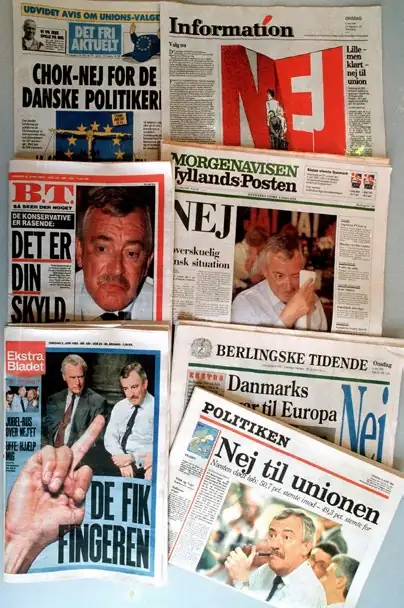</figure><p class="para"><span class="sentence">Aviser dagen efter, at et flertal af danskerne stemte nej til Maastrichttraktaten i 1992.<button class="speak" type="button" data-text="Aviser dagen efter, at et flertal af danskerne stemte nej til Maastrichttraktaten i 1992." title="Ouvir esta frase" aria-label="Ouvir esta frase">🔊</button></span> <span class="sentence">Foto: Ritzau Scanpix.<button class="speak" type="button" data-text="Foto: Ritzau Scanpix." title="Ouvir esta frase" aria-label="Ouvir esta frase">🔊</button></span> </p><div class="page">Side 126</div><p class="para"><span class="sentence">Forbeholdet over for den fælles valuta betyder, at Danmark ikke er forpligtet til at indføre euroen.<button class="speak" type="button" data-text="Forbeholdet over for den fælles valuta betyder, at Danmark ikke er forpligtet til at indføre euroen." title="Ouvir esta frase" aria-label="Ouvir esta frase">🔊</button></span> <span class="sentence">I 2000 var der en folkeafstemning, hvor befolkningen skulle tage stilling til, hvorvidt de ønskede at ophæve forbeholdet og derved indføre euroen i Danmark.<button class="speak" type="button" data-text="I 2000 var der en folkeafstemning, hvor befolkningen skulle tage stilling til, hvorvidt de ønskede at ophæve forbeholdet og derved indføre euroen i Danmark." title="Ouvir esta frase" aria-label="Ouvir esta frase">🔊</button></span> <span class="sentence">53,2 procent af danskerne stemte nej til dette forslag, og 46,8 procent stemte ja.<button class="speak" type="button" data-text="53,2 procent af danskerne stemte nej til dette forslag, og 46,8 procent stemte ja." title="Ouvir esta frase" aria-label="Ouvir esta frase">🔊</button></span> <span class="sentence">Til trods for, at Danmark har et euroforbehold, så deltager Danmark stadig i dele af eurosamarbejdet.<button class="speak" type="button" data-text="Til trods for, at Danmark har et euroforbehold, så deltager Danmark stadig i dele af eurosamarbejdet." title="Ouvir esta frase" aria-label="Ouvir esta frase">🔊</button></span> <span class="sentence">Eksempelvis fører Danmark såkaldt fastkurs politik, det vil sige, at kursen på den danske krone følger euroens kurs, så man altid kan købe 1 euro for cirka 7,50 danske kroner.<button class="speak" type="button" data-text="Eksempelvis fører Danmark såkaldt fastkurs politik, det vil sige, at kursen på den danske krone følger euroens kurs, så man altid kan købe 1 euro for cirka 7,50 danske kroner." title="Ouvir esta frase" aria-label="Ouvir esta frase">🔊</button></span> <span class="sentence">Ligeledes følger Danmark rentehævninger eller rentesænkninger fra Den Europæiske Centralbank.<button class="speak" type="button" data-text="Ligeledes følger Danmark rentehævninger eller rentesænkninger fra Den Europæiske Centralbank." title="Ouvir esta frase" aria-label="Ouvir esta frase">🔊</button></span> </p><p class="para"><span class="sentence">Tidligere havde Danmark også et forbehold over for EU’s forsvars- og sikker hedspolitik, så Danmark for eksempel ikke deltog i militære operationer, som er en del af EU-samarbejdet.<button class="speak" type="button" data-text="Tidligere havde Danmark også et forbehold over for EU’s forsvars- og sikker hedspolitik, så Danmark for eksempel ikke deltog i militære operationer, som er en del af EU-samarbejdet." title="Ouvir esta frase" aria-label="Ouvir esta frase">🔊</button></span> <span class="sentence">Dette såkaldte forsvars-forbehold blev ophævet som følge af en folkeafstemning den 1.<button class="speak" type="button" data-text="Dette såkaldte forsvars-forbehold blev ophævet som følge af en folkeafstemning den 1." title="Ouvir esta frase" aria-label="Ouvir esta frase">🔊</button></span> <span class="sentence">juni 2022.<button class="speak" type="button" data-text="juni 2022." title="Ouvir esta frase" aria-label="Ouvir esta frase">🔊</button></span> <span class="sentence">Et flertal på 66,9 procent stemte ja til at ophæve forbeholdet, mens et mindretal på 33,1 procent stemte nej.<button class="speak" type="button" data-text="Et flertal på 66,9 procent stemte ja til at ophæve forbeholdet, mens et mindretal på 33,1 procent stemte nej." title="Ouvir esta frase" aria-label="Ouvir esta frase">🔊</button></span> </p><p class="para"><span class="sentence">Danmarks forbehold over for unionsborgerskabet blev indført for at garantere, at unionsborgerskabet ikke skulle udvikle sig til noget på linje med det nationale statsborgerskab eller helt træde i stedet for dette.<button class="speak" type="button" data-text="Danmarks forbehold over for unionsborgerskabet blev indført for at garantere, at unionsborgerskabet ikke skulle udvikle sig til noget på linje med det nationale statsborgerskab eller helt træde i stedet for dette." title="Ouvir esta frase" aria-label="Ouvir esta frase">🔊</button></span> <span class="sentence">Med Amsterdam-traktatens ikrafttræden i 1999 kom dette til at gælde for alle medlemslande.<button class="speak" type="button" data-text="Med Amsterdam-traktatens ikrafttræden i 1999 kom dette til at gælde for alle medlemslande." title="Ouvir esta frase" aria-label="Ouvir esta frase">🔊</button></span> <span class="sentence">Derfor er dette danske EU-forbehold heller ikke længere relevant.<button class="speak" type="button" data-text="Derfor er dette danske EU-forbehold heller ikke længere relevant." title="Ouvir esta frase" aria-label="Ouvir esta frase">🔊</button></span> </p><h3>EU&#x27;S INSTITUTIONER OG DANMARKS REPRÆSENTATION I EU</h3><p class="para"><span class="sentence">De vigtigste EU-institutioner er 1) Europa-Kommissionen, 2) Europa-Parla mentet, 3) Det Europæiske Råd (også kaldet EU-topmøder) 4) Rådet for Den Europæiske Union (kort: Rådet eller Ministerrådet) og 5) EU-Domstolen.<button class="speak" type="button" data-text="De vigtigste EU-institutioner er 1) Europa-Kommissionen, 2) Europa-Parla mentet, 3) Det Europæiske Råd (også kaldet EU-topmøder) 4) Rådet for Den Europæiske Union (kort: Rådet eller Ministerrådet) og 5) EU-Domstolen." title="Ouvir esta frase" aria-label="Ouvir esta frase">🔊</button></span> </p><p class="para"><span class="sentence">Kort fortalt er det hovedreglen, at Europa-Kommissionen stiller forslag om ny EU-lovgivning.<button class="speak" type="button" data-text="Kort fortalt er det hovedreglen, at Europa-Kommissionen stiller forslag om ny EU-lovgivning." title="Ouvir esta frase" aria-label="Ouvir esta frase">🔊</button></span> <span class="sentence">Det er så Rådet og Europa-Parlamentet, der i fællesskab vedtager, ændrer i eller forkaster forslaget.<button class="speak" type="button" data-text="Det er så Rådet og Europa-Parlamentet, der i fællesskab vedtager, ændrer i eller forkaster forslaget." title="Ouvir esta frase" aria-label="Ouvir esta frase">🔊</button></span> <span class="sentence">Danmark er repræsenteret i EU på forskellig vis i disse institutioner.<button class="speak" type="button" data-text="Danmark er repræsenteret i EU på forskellig vis i disse institutioner." title="Ouvir esta frase" aria-label="Ouvir esta frase">🔊</button></span> </p><h3>Europa-Kommissionen</h3><p class="para"><span class="sentence">Ligesom de andre medlemslande i EU sender Danmark én kommissær til Europa-kommissionen.<button class="speak" type="button" data-text="Ligesom de andre medlemslande i EU sender Danmark én kommissær til Europa-kommissionen." title="Ouvir esta frase" aria-label="Ouvir esta frase">🔊</button></span> <span class="sentence">Europa-Kommissionen har i dag 27 medlemmer.<button class="speak" type="button" data-text="Europa-Kommissionen har i dag 27 medlemmer." title="Ouvir esta frase" aria-label="Ouvir esta frase">🔊</button></span> <span class="sentence">Europa-Kommissionen skal komme med konkrete forslag til ny lovgivning.<button class="speak" type="button" data-text="Europa-Kommissionen skal komme med konkrete forslag til ny lovgivning." title="Ouvir esta frase" aria-label="Ouvir esta frase">🔊</button></span> <span class="sentence">Den skal også tage andre initiativer, der kan føre traktaternes og EU-topmødernes overordnede politiske målsætninger ud i livet.<button class="speak" type="button" data-text="Den skal også tage andre initiativer, der kan føre traktaternes og EU-topmødernes overordnede politiske målsætninger ud i livet." title="Ouvir esta frase" aria-label="Ouvir esta frase">🔊</button></span> <span class="sentence">Europa-Kommissionen har ret og pligt til at foreslå ny lovgivning for at gennemføre EU-politikken.<button class="speak" type="button" data-text="Europa-Kommissionen har ret og pligt til at foreslå ny lovgivning for at gennemføre EU-politikken." title="Ouvir esta frase" aria-label="Ouvir esta frase">🔊</button></span> </p><p class="para"><span class="sentence">Europa-Kommissionen kontrollerer også, om medlemslandene retter sig efter EU-lovgivningen.<button class="speak" type="button" data-text="Europa-Kommissionen kontrollerer også, om medlemslandene retter sig efter EU-lovgivningen." title="Ouvir esta frase" aria-label="Ouvir esta frase">🔊</button></span> <span class="sentence">Hvis et land ikke gør det, kan Europa-Kommissionen rejse en sag imod det pågældende land ved EU-Domstolen.<button class="speak" type="button" data-text="Hvis et land ikke gør det, kan Europa-Kommissionen rejse en sag imod det pågældende land ved EU-Domstolen." title="Ouvir esta frase" aria-label="Ouvir esta frase">🔊</button></span> </p><div class="page">Side 127</div><p class="para"><span class="sentence">De enkelte medlemmer af Kommissionen udpeges af de enkelte medlemslande for en femårig periode og skal fungere uafhængigt af de medlemslande, som de kommer fra.<button class="speak" type="button" data-text="De enkelte medlemmer af Kommissionen udpeges af de enkelte medlemslande for en femårig periode og skal fungere uafhængigt af de medlemslande, som de kommer fra." title="Ouvir esta frase" aria-label="Ouvir esta frase">🔊</button></span> <span class="sentence">Det vil sige, at de kun skal arbejde for EU’s interesser og ikke for det pågældende medlemsland.<button class="speak" type="button" data-text="Det vil sige, at de kun skal arbejde for EU’s interesser og ikke for det pågældende medlemsland." title="Ouvir esta frase" aria-label="Ouvir esta frase">🔊</button></span> <span class="sentence">De har ligesom de danske ministre ansvar for hver sit særlige område.<button class="speak" type="button" data-text="De har ligesom de danske ministre ansvar for hver sit særlige område." title="Ouvir esta frase" aria-label="Ouvir esta frase">🔊</button></span> <span class="sentence">For eksempel er der udpeget en kommissær for økonomi og produktivitet, en kommissær for klima, en kommissær for landbrug og fødevarer, en kommissær for forsvar og rumfart, en kommissær for fiskeri og oceaner med videre.<button class="speak" type="button" data-text="For eksempel er der udpeget en kommissær for økonomi og produktivitet, en kommissær for klima, en kommissær for landbrug og fødevarer, en kommissær for forsvar og rumfart, en kommissær for fiskeri og oceaner med videre." title="Ouvir esta frase" aria-label="Ouvir esta frase">🔊</button></span> </p><p class="para"><span class="sentence">Danmarks EU-kommissær har siden 2024 været Dan Jørgensen (født 1975) fra Socialdemokratiet, som tidligere har været medlem af Europa-Parlamentet og klimaminister i Danmark.<button class="speak" type="button" data-text="Danmarks EU-kommissær har siden 2024 været Dan Jørgensen (født 1975) fra Socialdemokratiet, som tidligere har været medlem af Europa-Parlamentet og klimaminister i Danmark." title="Ouvir esta frase" aria-label="Ouvir esta frase">🔊</button></span> <span class="sentence">Han er kommissær for energi og boliger.<button class="speak" type="button" data-text="Han er kommissær for energi og boliger." title="Ouvir esta frase" aria-label="Ouvir esta frase">🔊</button></span> </p><figure>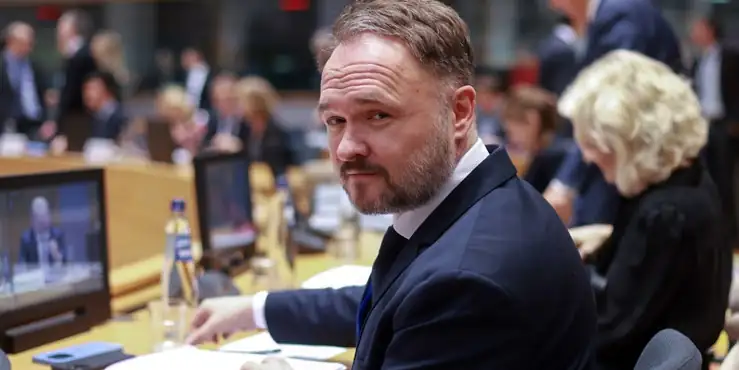</figure><p class="para"><span class="sentence">Danmarks EU-kommissær Dan Jørgensen til møde med energiministrene fra EU&#x27;s medlemsstater.<button class="speak" type="button" data-text="Danmarks EU-kommissær Dan Jørgensen til møde med energiministrene fra EU&#x27;s medlemsstater." title="Ouvir esta frase" aria-label="Ouvir esta frase">🔊</button></span> <span class="sentence">Foto: Olivier Hoslet/Ritzau Scanpix.<button class="speak" type="button" data-text="Foto: Olivier Hoslet/Ritzau Scanpix." title="Ouvir esta frase" aria-label="Ouvir esta frase">🔊</button></span> </p><p class="para"><span class="sentence">I perioden 2014-24 var Margrethe Vestager (f.<button class="speak" type="button" data-text="I perioden 2014-24 var Margrethe Vestager (f." title="Ouvir esta frase" aria-label="Ouvir esta frase">🔊</button></span> <span class="sentence">1968) fra Radikale Venstre, som tidligere var økonomi- og indenrigsminister i Danmark, udpeget som dansk kommissær.<button class="speak" type="button" data-text="1968) fra Radikale Venstre, som tidligere var økonomi- og indenrigsminister i Danmark, udpeget som dansk kommissær." title="Ouvir esta frase" aria-label="Ouvir esta frase">🔊</button></span> <span class="sentence">Margrethe Vestager var næstformand for Kommissionen og kommissær for konkurrencepolitikken i EU.<button class="speak" type="button" data-text="Margrethe Vestager var næstformand for Kommissionen og kommissær for konkurrencepolitikken i EU." title="Ouvir esta frase" aria-label="Ouvir esta frase">🔊</button></span> </p><p class="para"><span class="sentence">Til at hjælpe med at foreslå og gennemføre EU-lovgivningen har EU-kommis særerne en stor forvaltning, som minder om de danske ministerier.<button class="speak" type="button" data-text="Til at hjælpe med at foreslå og gennemføre EU-lovgivningen har EU-kommis særerne en stor forvaltning, som minder om de danske ministerier." title="Ouvir esta frase" aria-label="Ouvir esta frase">🔊</button></span> <span class="sentence">I EU kaldes de generaldirektorater.<button class="speak" type="button" data-text="I EU kaldes de generaldirektorater." title="Ouvir esta frase" aria-label="Ouvir esta frase">🔊</button></span> </p><figure>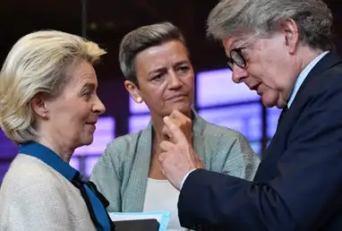</figure><p class="para"><span class="sentence">EU-kommissionens formand Ursula von der Leyen sammen med to tidligere EU-kommissærer: Danske Margrethe Vestager og franske Thierry Breton.<button class="speak" type="button" data-text="EU-kommissionens formand Ursula von der Leyen sammen med to tidligere EU-kommissærer: Danske Margrethe Vestager og franske Thierry Breton." title="Ouvir esta frase" aria-label="Ouvir esta frase">🔊</button></span> <span class="sentence">Foto: John Thys/ Ritzau Scanpix.<button class="speak" type="button" data-text="Foto: John Thys/ Ritzau Scanpix." title="Ouvir esta frase" aria-label="Ouvir esta frase">🔊</button></span> </p><div class="page">Side 128</div><h3>Europa-Parlamentet</h3><p class="para"><span class="sentence">Europa-Parlamentet er den direkte folkevalgte forsamling i det europæ iske samarbejde, idet dets medlemmer vælges af borgerne i EU’s medlems lande.<button class="speak" type="button" data-text="Europa-Parlamentet er den direkte folkevalgte forsamling i det europæ iske samarbejde, idet dets medlemmer vælges af borgerne i EU’s medlems lande." title="Ouvir esta frase" aria-label="Ouvir esta frase">🔊</button></span> <span class="sentence">Europa-Parlamentet fungerer overordnet set som en slags lovgivende myndighed i EU.<button class="speak" type="button" data-text="Europa-Parlamentet fungerer overordnet set som en slags lovgivende myndighed i EU." title="Ouvir esta frase" aria-label="Ouvir esta frase">🔊</button></span> <span class="sentence">Det minder om det danske Folketing men har mere begrænset magt.<button class="speak" type="button" data-text="Det minder om det danske Folketing men har mere begrænset magt." title="Ouvir esta frase" aria-label="Ouvir esta frase">🔊</button></span> <span class="sentence">For eksempel kan Europa-Parlamentet ikke opkræve skat.<button class="speak" type="button" data-text="For eksempel kan Europa-Parlamentet ikke opkræve skat." title="Ouvir esta frase" aria-label="Ouvir esta frase">🔊</button></span> </p><p class="para"><span class="sentence">Europa-Parlamentet vedtager ny lovgivning på baggrund af forslag fra Europa-Kommissionen.<button class="speak" type="button" data-text="Europa-Parlamentet vedtager ny lovgivning på baggrund af forslag fra Europa-Kommissionen." title="Ouvir esta frase" aria-label="Ouvir esta frase">🔊</button></span> <span class="sentence">Derudover skal Europa-Parlamentet blandt andet også vedtage EU’s udgiftsbudget.<button class="speak" type="button" data-text="Derudover skal Europa-Parlamentet blandt andet også vedtage EU’s udgiftsbudget." title="Ouvir esta frase" aria-label="Ouvir esta frase">🔊</button></span> <span class="sentence">Europa-Parlamentet består af 720 medlemmer fra de 27 EU-lande.<button class="speak" type="button" data-text="Europa-Parlamentet består af 720 medlemmer fra de 27 EU-lande." title="Ouvir esta frase" aria-label="Ouvir esta frase">🔊</button></span> <span class="sentence">Hvert land har et antal pladser, der afspejler landets indbyg gertal.<button class="speak" type="button" data-text="Hvert land har et antal pladser, der afspejler landets indbyg gertal." title="Ouvir esta frase" aria-label="Ouvir esta frase">🔊</button></span> <span class="sentence">Danmark har 15 medlemmer i Europa-Parlamentet, mens store lande som Tyskland, Frankrig og Italien har et større antal medlemmer.<button class="speak" type="button" data-text="Danmark har 15 medlemmer i Europa-Parlamentet, mens store lande som Tyskland, Frankrig og Italien har et større antal medlemmer." title="Ouvir esta frase" aria-label="Ouvir esta frase">🔊</button></span> </p><p class="para"><span class="sentence">Der afholdes valg til Europa-Parlamentet hvert femte år.<button class="speak" type="button" data-text="Der afholdes valg til Europa-Parlamentet hvert femte år." title="Ouvir esta frase" aria-label="Ouvir esta frase">🔊</button></span> <span class="sentence">Medlemmerne i Europa-Parlamentet er grupperet i partier eller grupper ud fra deres politiske holdninger – og ikke efter, hvilket land de kommer fra.<button class="speak" type="button" data-text="Medlemmerne i Europa-Parlamentet er grupperet i partier eller grupper ud fra deres politiske holdninger – og ikke efter, hvilket land de kommer fra." title="Ouvir esta frase" aria-label="Ouvir esta frase">🔊</button></span> <span class="sentence">De danske medlemmer af Europa-Parlamentet er derfor fordelt på en konservativ gruppe, en socialdemo kratisk gruppe, en liberal gruppe, en grøn gruppe og andre grupper.<button class="speak" type="button" data-text="De danske medlemmer af Europa-Parlamentet er derfor fordelt på en konservativ gruppe, en socialdemo kratisk gruppe, en liberal gruppe, en grøn gruppe og andre grupper." title="Ouvir esta frase" aria-label="Ouvir esta frase">🔊</button></span> </p><p class="para"><span class="sentence">Det seneste valg til Europa-Parlamentet blev afholdt i juni 2024.<button class="speak" type="button" data-text="Det seneste valg til Europa-Parlamentet blev afholdt i juni 2024." title="Ouvir esta frase" aria-label="Ouvir esta frase">🔊</button></span> <span class="sentence">Som følge af dette valg fordeler de 15 danske medlemmer af Europa-Parlamentet sig således på følgende partier: Socialistisk Folkeparti (SF) 3, Socialdemokratiet 3, Venstre 2, Det Konservative Folkeparti 1, Danmarksdemokraterne 1, Radikale Venstre 1, Enhedslisten 1, Liberal Alliance 1, Dansk Folkeparti 1 og Moderaterne 1.<button class="speak" type="button" data-text="Som følge af dette valg fordeler de 15 danske medlemmer af Europa-Parlamentet sig således på følgende partier: Socialistisk Folkeparti (SF) 3, Socialdemokratiet 3, Venstre 2, Det Konservative Folkeparti 1, Danmarksdemokraterne 1, Radikale Venstre 1, Enhedslisten 1, Liberal Alliance 1, Dansk Folkeparti 1 og Moderaterne 1." title="Ouvir esta frase" aria-label="Ouvir esta frase">🔊</button></span> </p><p class="para"><span class="sentence">Alternativet stillede også op til valget, men fik ikke nok stemmer til at blive valgt.<button class="speak" type="button" data-text="Alternativet stillede også op til valget, men fik ikke nok stemmer til at blive valgt." title="Ouvir esta frase" aria-label="Ouvir esta frase">🔊</button></span> </p><figure>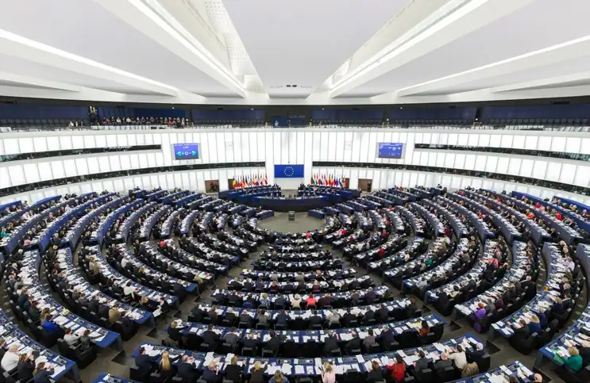</figure><p class="para"><span class="sentence">Europa-Parlamentet i Bruxelles.<button class="speak" type="button" data-text="Europa-Parlamentet i Bruxelles." title="Ouvir esta frase" aria-label="Ouvir esta frase">🔊</button></span> </p><div class="page">Side 129</div><h3>Det Europæiske Råd (EU-topmøder)</h3><p class="para"><span class="sentence">Den danske statsminister mødes med de andre regeringsledere i EU til EU-top møder i Det Europæiske Råd.<button class="speak" type="button" data-text="Den danske statsminister mødes med de andre regeringsledere i EU til EU-top møder i Det Europæiske Råd." title="Ouvir esta frase" aria-label="Ouvir esta frase">🔊</button></span> <span class="sentence">Her fastlægger lederne de overordnede politiske rammer for samarbejdet i EU.<button class="speak" type="button" data-text="Her fastlægger lederne de overordnede politiske rammer for samarbejdet i EU." title="Ouvir esta frase" aria-label="Ouvir esta frase">🔊</button></span> <span class="sentence">De tager også beslutninger om andre vigtige poli tiske spørgsmål.<button class="speak" type="button" data-text="De tager også beslutninger om andre vigtige poli tiske spørgsmål." title="Ouvir esta frase" aria-label="Ouvir esta frase">🔊</button></span> <span class="sentence">Det kan for eksempel være om EU’s udvidelse, EU’s traktater eller EU’s politik på den globale scene.<button class="speak" type="button" data-text="Det kan for eksempel være om EU’s udvidelse, EU’s traktater eller EU’s politik på den globale scene." title="Ouvir esta frase" aria-label="Ouvir esta frase">🔊</button></span> </p><p class="para"><span class="sentence">Beslutningerne træffes som hovedregel ved enighed.<button class="speak" type="button" data-text="Beslutningerne træffes som hovedregel ved enighed." title="Ouvir esta frase" aria-label="Ouvir esta frase">🔊</button></span> </p><h3>Rådet (Rådet for Den Europæiske Union)</h3><p class="para"><span class="sentence">I Rådet mødes medlemsstaternes ministre fra medlemslandenes regeringer med jævne mellemrum.<button class="speak" type="button" data-text="I Rådet mødes medlemsstaternes ministre fra medlemslandenes regeringer med jævne mellemrum." title="Ouvir esta frase" aria-label="Ouvir esta frase">🔊</button></span> <span class="sentence">Derfor kaldes denne institution også ofte Ministerrådet.<button class="speak" type="button" data-text="Derfor kaldes denne institution også ofte Ministerrådet." title="Ouvir esta frase" aria-label="Ouvir esta frase">🔊</button></span> <span class="sentence">Rådet består således i praksis af skiftende fagministre, én fra hvert land.<button class="speak" type="button" data-text="Rådet består således i praksis af skiftende fagministre, én fra hvert land." title="Ouvir esta frase" aria-label="Ouvir esta frase">🔊</button></span> <span class="sentence">Når der for eksempel skal drøftes og vedtages noget, der vedrører miljøet, er det de 27 miljøministre, der mødes.<button class="speak" type="button" data-text="Når der for eksempel skal drøftes og vedtages noget, der vedrører miljøet, er det de 27 miljøministre, der mødes." title="Ouvir esta frase" aria-label="Ouvir esta frase">🔊</button></span> <span class="sentence">Hvis det drejer sig om det indre marked, mødes erhvervsministrene.<button class="speak" type="button" data-text="Hvis det drejer sig om det indre marked, mødes erhvervsministrene." title="Ouvir esta frase" aria-label="Ouvir esta frase">🔊</button></span> <span class="sentence">Og hvis et forslag om EU-lovgivning vedrørende landbrug serhvervet er på dagsordenen, mødes fødevareministrene.<button class="speak" type="button" data-text="Og hvis et forslag om EU-lovgivning vedrørende landbrug serhvervet er på dagsordenen, mødes fødevareministrene." title="Ouvir esta frase" aria-label="Ouvir esta frase">🔊</button></span> </p><p class="para"><span class="sentence">Rådet lovgiver sammen med Europa-Parlamentet.<button class="speak" type="button" data-text="Rådet lovgiver sammen med Europa-Parlamentet." title="Ouvir esta frase" aria-label="Ouvir esta frase">🔊</button></span> <span class="sentence">Det betyder, at vedtagelse af EU-lovgivning som udgangspunkt kræver tilslutning fra både Rådet og EuropaParlamentet.<button class="speak" type="button" data-text="Det betyder, at vedtagelse af EU-lovgivning som udgangspunkt kræver tilslutning fra både Rådet og EuropaParlamentet." title="Ouvir esta frase" aria-label="Ouvir esta frase">🔊</button></span> <span class="sentence">På enkelte områder skal Europa-Parlamentet imidlertid kun høres, mens det er Rådet, der træffer den endelige beslutning.<button class="speak" type="button" data-text="På enkelte områder skal Europa-Parlamentet imidlertid kun høres, mens det er Rådet, der træffer den endelige beslutning." title="Ouvir esta frase" aria-label="Ouvir esta frase">🔊</button></span> </p><p class="para"><span class="sentence">De forskellige lande i EU skiftes også til at have et såkaldt formandskab.<button class="speak" type="button" data-text="De forskellige lande i EU skiftes også til at have et såkaldt formandskab." title="Ouvir esta frase" aria-label="Ouvir esta frase">🔊</button></span> <span class="sentence">Dette går på skift hver sjette måned, og landet, der har &quot;EU-formandskabet&quot;, leder møderne i Rådet og i en lang række udvalg og komiteer.<button class="speak" type="button" data-text="Dette går på skift hver sjette måned, og landet, der har &quot;EU-formandskabet&quot;, leder møderne i Rådet og i en lang række udvalg og komiteer." title="Ouvir esta frase" aria-label="Ouvir esta frase">🔊</button></span> <span class="sentence">Sidste danske EU-for mandskab var i 2025.<button class="speak" type="button" data-text="Sidste danske EU-for mandskab var i 2025." title="Ouvir esta frase" aria-label="Ouvir esta frase">🔊</button></span> </p><h3>EU-Domstolen</h3><p class="para"><span class="sentence">Ligesom de andre lande i EU har Danmark har også én dommer i Den Europæ iske Unions Domstol – i daglig tale ofte kaldet EU-Domstolen.<button class="speak" type="button" data-text="Ligesom de andre lande i EU har Danmark har også én dommer i Den Europæ iske Unions Domstol – i daglig tale ofte kaldet EU-Domstolen." title="Ouvir esta frase" aria-label="Ouvir esta frase">🔊</button></span> <span class="sentence">EU-Domstolens opgave er at sikre, at EU-lovgivningen bliver overholdt.<button class="speak" type="button" data-text="EU-Domstolens opgave er at sikre, at EU-lovgivningen bliver overholdt." title="Ouvir esta frase" aria-label="Ouvir esta frase">🔊</button></span> <span class="sentence">Domstolen kan blandt andet afgøre konflikter mellem to medlemslande og mellem EU og det enkelte medlemsland.<button class="speak" type="button" data-text="Domstolen kan blandt andet afgøre konflikter mellem to medlemslande og mellem EU og det enkelte medlemsland." title="Ouvir esta frase" aria-label="Ouvir esta frase">🔊</button></span> <span class="sentence">EU-Domstolen kan også bestemme, hvordan EU-reglerne skal forstås.<button class="speak" type="button" data-text="EU-Domstolen kan også bestemme, hvordan EU-reglerne skal forstås." title="Ouvir esta frase" aria-label="Ouvir esta frase">🔊</button></span> <span class="sentence">Hvis en national domstol i et medlemsland er i tvivl om dét, kan den spørge EU-Domstolen.<button class="speak" type="button" data-text="Hvis en national domstol i et medlemsland er i tvivl om dét, kan den spørge EU-Domstolen." title="Ouvir esta frase" aria-label="Ouvir esta frase">🔊</button></span> </p><div class="page">Side 130</div><h3 id="s130-4">4.2.2 EUROPARÅDET</h3><p class="para"><span class="sentence">Danmark har været medlem af Europarådet, siden det blev oprettet i 1949.<button class="speak" type="button" data-text="Danmark har været medlem af Europarådet, siden det blev oprettet i 1949." title="Ouvir esta frase" aria-label="Ouvir esta frase">🔊</button></span> <span class="sentence">Euro parådet bestod i 1949 af ti vesteuropæiske demokratier.<button class="speak" type="button" data-text="Euro parådet bestod i 1949 af ti vesteuropæiske demokratier." title="Ouvir esta frase" aria-label="Ouvir esta frase">🔊</button></span> <span class="sentence">I dag er 47 europæiske stater medlemmer.<button class="speak" type="button" data-text="I dag er 47 europæiske stater medlemmer." title="Ouvir esta frase" aria-label="Ouvir esta frase">🔊</button></span> <span class="sentence">Europarådet er ikke en EU-institution.<button class="speak" type="button" data-text="Europarådet er ikke en EU-institution." title="Ouvir esta frase" aria-label="Ouvir esta frase">🔊</button></span> <span class="sentence">Det er en selvstændig organisation i Europa.<button class="speak" type="button" data-text="Det er en selvstændig organisation i Europa." title="Ouvir esta frase" aria-label="Ouvir esta frase">🔊</button></span> <span class="sentence">Europarådet er således en helt anden institution end Det Europæiske Råd.<button class="speak" type="button" data-text="Europarådet er således en helt anden institution end Det Europæiske Råd." title="Ouvir esta frase" aria-label="Ouvir esta frase">🔊</button></span> </p><p class="para"><span class="sentence">Før et land kan blive medlem af Europarådet, skal det anerkende dets borgeres personlige og politiske frihedsrettigheder.<button class="speak" type="button" data-text="Før et land kan blive medlem af Europarådet, skal det anerkende dets borgeres personlige og politiske frihedsrettigheder." title="Ouvir esta frase" aria-label="Ouvir esta frase">🔊</button></span> <span class="sentence">Europarådets formål er at sikre et tæt samarbejde mellem sine medlemslande på en lang række politiske områder.<button class="speak" type="button" data-text="Europarådets formål er at sikre et tæt samarbejde mellem sine medlemslande på en lang række politiske områder." title="Ouvir esta frase" aria-label="Ouvir esta frase">🔊</button></span> <span class="sentence">Målet er også at udbygge det europæiske demokrati.<button class="speak" type="button" data-text="Målet er også at udbygge det europæiske demokrati." title="Ouvir esta frase" aria-label="Ouvir esta frase">🔊</button></span> <span class="sentence">Rusland blev suspenderet fra Europarådet efter angrebet på Ukraine i 2022.<button class="speak" type="button" data-text="Rusland blev suspenderet fra Europarådet efter angrebet på Ukraine i 2022." title="Ouvir esta frase" aria-label="Ouvir esta frase">🔊</button></span> </p><p class="para"><span class="sentence">Europarådet står blandt andet bag udarbejdelsen af Den Europæiske Menneske rettighedskonvention fra 1950.<button class="speak" type="button" data-text="Europarådet står blandt andet bag udarbejdelsen af Den Europæiske Menneske rettighedskonvention fra 1950." title="Ouvir esta frase" aria-label="Ouvir esta frase">🔊</button></span> <span class="sentence">Det har også oprettet en domstol på menneske rettighedsområdet – Den Europæiske Menneskerettighedsdomstol – som skal sikre, at konventionen overholdes.<button class="speak" type="button" data-text="Det har også oprettet en domstol på menneske rettighedsområdet – Den Europæiske Menneskerettighedsdomstol – som skal sikre, at konventionen overholdes." title="Ouvir esta frase" aria-label="Ouvir esta frase">🔊</button></span> <span class="sentence">Ved at tiltræde konventionen har Danmark forpligtet sig til at overholde de grundlæggende friheds- og menneskerettig heder.<button class="speak" type="button" data-text="Ved at tiltræde konventionen har Danmark forpligtet sig til at overholde de grundlæggende friheds- og menneskerettig heder." title="Ouvir esta frase" aria-label="Ouvir esta frase">🔊</button></span> <span class="sentence">Det vil blandt andet sige ytrings-, forsamlings- og religionsfrihed.<button class="speak" type="button" data-text="Det vil blandt andet sige ytrings-, forsamlings- og religionsfrihed." title="Ouvir esta frase" aria-label="Ouvir esta frase">🔊</button></span> <span class="sentence">I 1992 blev Menneskerettighedskonventionen formelt indarbejdet i dansk lov.<button class="speak" type="button" data-text="I 1992 blev Menneskerettighedskonventionen formelt indarbejdet i dansk lov." title="Ouvir esta frase" aria-label="Ouvir esta frase">🔊</button></span> <span class="sentence">Den står dermed på linje med andre love i Danmark, men under grundloven.<button class="speak" type="button" data-text="Den står dermed på linje med andre love i Danmark, men under grundloven." title="Ouvir esta frase" aria-label="Ouvir esta frase">🔊</button></span> <span class="sentence">Danmark har samtidig anerkendt, at enkeltpersoner under nærmere betingelser kan indbringe en sag mod Danmark for Den Europæiske Menneskerettighedsdomstol.<button class="speak" type="button" data-text="Danmark har samtidig anerkendt, at enkeltpersoner under nærmere betingelser kan indbringe en sag mod Danmark for Den Europæiske Menneskerettighedsdomstol." title="Ouvir esta frase" aria-label="Ouvir esta frase">🔊</button></span> </p><div class="page">Side 131</div><h2 id="s131-5">4.3 DANMARKS GLOBALE SAMARBEJDE</h2><p class="para"><span class="sentence">De internationale forbindelser stopper ikke ved Europa.<button class="speak" type="button" data-text="De internationale forbindelser stopper ikke ved Europa." title="Ouvir esta frase" aria-label="Ouvir esta frase">🔊</button></span> <span class="sentence">Danmark er også medlem af mange organisationer, der beskæftiger sig med større regionale eller globale spørgsmål.<button class="speak" type="button" data-text="Danmark er også medlem af mange organisationer, der beskæftiger sig med større regionale eller globale spørgsmål." title="Ouvir esta frase" aria-label="Ouvir esta frase">🔊</button></span> <span class="sentence">En af de vigtigste er FN.<button class="speak" type="button" data-text="En af de vigtigste er FN." title="Ouvir esta frase" aria-label="Ouvir esta frase">🔊</button></span> <span class="sentence">Danmark har også et stort samarbejde om udvikling med en række udviklingslande i blandt andet Afrika, Latinamerika og Asien.<button class="speak" type="button" data-text="Danmark har også et stort samarbejde om udvikling med en række udviklingslande i blandt andet Afrika, Latinamerika og Asien." title="Ouvir esta frase" aria-label="Ouvir esta frase">🔊</button></span> </p><h3 id="s131-6">4.3.1 FN (DE FORENEDE NATIONER)</h3><p class="para"><span class="sentence">FN (De Forenede Nationer) er en verdensomspændende organisation, som består af selvstændige stater.<button class="speak" type="button" data-text="FN (De Forenede Nationer) er en verdensomspændende organisation, som består af selvstændige stater." title="Ouvir esta frase" aria-label="Ouvir esta frase">🔊</button></span> <span class="sentence">FN blev grundlagt i 1945 kort efter afslutningen af 2.<button class="speak" type="button" data-text="FN blev grundlagt i 1945 kort efter afslutningen af 2." title="Ouvir esta frase" aria-label="Ouvir esta frase">🔊</button></span> <span class="sentence">Verdenskrig.<button class="speak" type="button" data-text="Verdenskrig." title="Ouvir esta frase" aria-label="Ouvir esta frase">🔊</button></span> <span class="sentence">FN fik fra begyndelsen tilslutning fra 51 stater.<button class="speak" type="button" data-text="FN fik fra begyndelsen tilslutning fra 51 stater." title="Ouvir esta frase" aria-label="Ouvir esta frase">🔊</button></span> <span class="sentence">I dag er medlems tallet 193.<button class="speak" type="button" data-text="I dag er medlems tallet 193." title="Ouvir esta frase" aria-label="Ouvir esta frase">🔊</button></span> <span class="sentence">Danmark har været medlem af FN siden stiftelsen i 1945.<button class="speak" type="button" data-text="Danmark har været medlem af FN siden stiftelsen i 1945." title="Ouvir esta frase" aria-label="Ouvir esta frase">🔊</button></span> </p><p class="para"><span class="sentence">FN’s vigtigste opgaver ligger inden for fred og sikkerhed, menneskerettigheder, udviklingsaktiviteter samt humanitære indsatser.<button class="speak" type="button" data-text="FN’s vigtigste opgaver ligger inden for fred og sikkerhed, menneskerettigheder, udviklingsaktiviteter samt humanitære indsatser." title="Ouvir esta frase" aria-label="Ouvir esta frase">🔊</button></span> <span class="sentence">Spørgsmål som konflikter, økonomi, fattigdom, sult, sygdomme og miljø er derfor centrale for FN’s arbejde.<button class="speak" type="button" data-text="Spørgsmål som konflikter, økonomi, fattigdom, sult, sygdomme og miljø er derfor centrale for FN’s arbejde." title="Ouvir esta frase" aria-label="Ouvir esta frase">🔊</button></span> <span class="sentence">Desuden arbejder FN med børns vilkår, kvinders rettigheder, kultur og uddan nelse.<button class="speak" type="button" data-text="Desuden arbejder FN med børns vilkår, kvinders rettigheder, kultur og uddan nelse." title="Ouvir esta frase" aria-label="Ouvir esta frase">🔊</button></span> <span class="sentence">FN’s hovedkvarter ligger i New York, men nogle af dets underorganisa tioner har hovedsæde andre steder i verden, blandt andet i Geneve, Nairobi og Wien.<button class="speak" type="button" data-text="FN’s hovedkvarter ligger i New York, men nogle af dets underorganisa tioner har hovedsæde andre steder i verden, blandt andet i Geneve, Nairobi og Wien." title="Ouvir esta frase" aria-label="Ouvir esta frase">🔊</button></span> <span class="sentence">Den øverste leder i FN er FN’s generalsekretær.<button class="speak" type="button" data-text="Den øverste leder i FN er FN’s generalsekretær." title="Ouvir esta frase" aria-label="Ouvir esta frase">🔊</button></span> </p><figure>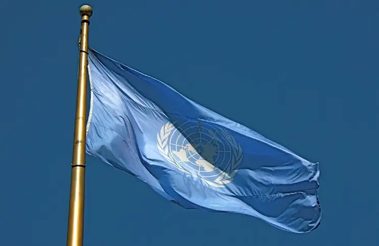</figure><p class="para"><span class="sentence">FN-flaget.<button class="speak" type="button" data-text="FN-flaget." title="Ouvir esta frase" aria-label="Ouvir esta frase">🔊</button></span> </p><div class="page">Side 132</div><figure>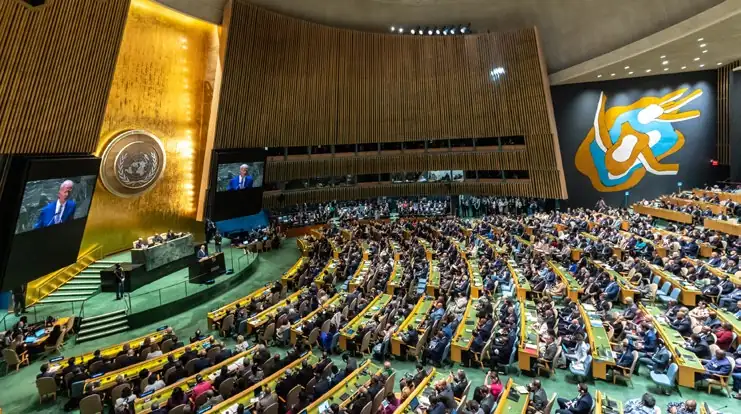</figure><p class="para"><span class="sentence">USA&#x27;s daværende præsident Joe Biden (f.<button class="speak" type="button" data-text="USA&#x27;s daværende præsident Joe Biden (f." title="Ouvir esta frase" aria-label="Ouvir esta frase">🔊</button></span> <span class="sentence">1942) taler til FN&#x27;s Generalforsamling i 2023.<button class="speak" type="button" data-text="1942) taler til FN&#x27;s Generalforsamling i 2023." title="Ouvir esta frase" aria-label="Ouvir esta frase">🔊</button></span> <span class="sentence">Foto: Ron Przysucha.<button class="speak" type="button" data-text="Foto: Ron Przysucha." title="Ouvir esta frase" aria-label="Ouvir esta frase">🔊</button></span> </p><p class="para"><span class="sentence">FN afholder en årlig Generalforsamling, som finder sted i FN’s hovedkvarter i New York.<button class="speak" type="button" data-text="FN afholder en årlig Generalforsamling, som finder sted i FN’s hovedkvarter i New York." title="Ouvir esta frase" aria-label="Ouvir esta frase">🔊</button></span> <span class="sentence">Generalforsamlingen har mange formål, herunder at diskutere aktu elle sager i FN’s medlemslande, at vedtage budgettet for FN og at diskutere rapporter fra FN’s Sikkerhedsråd.<button class="speak" type="button" data-text="Generalforsamlingen har mange formål, herunder at diskutere aktu elle sager i FN’s medlemslande, at vedtage budgettet for FN og at diskutere rapporter fra FN’s Sikkerhedsråd." title="Ouvir esta frase" aria-label="Ouvir esta frase">🔊</button></span> </p><p class="para"><span class="sentence">Hovedopgaven i FN’s Sikkerhedsråd er at behandle konflikter, der kan true den internationale fred og sikkerhed.<button class="speak" type="button" data-text="Hovedopgaven i FN’s Sikkerhedsråd er at behandle konflikter, der kan true den internationale fred og sikkerhed." title="Ouvir esta frase" aria-label="Ouvir esta frase">🔊</button></span> <span class="sentence">Sikkerhedsrådet har fem faste (permanente) medlemmer.<button class="speak" type="button" data-text="Sikkerhedsrådet har fem faste (permanente) medlemmer." title="Ouvir esta frase" aria-label="Ouvir esta frase">🔊</button></span> <span class="sentence">Det er Rusland, Kina, Storbritannien, USA og Frankrig, som var de fem vigtigste lande, som var med til at vinde 2.<button class="speak" type="button" data-text="Det er Rusland, Kina, Storbritannien, USA og Frankrig, som var de fem vigtigste lande, som var med til at vinde 2." title="Ouvir esta frase" aria-label="Ouvir esta frase">🔊</button></span> <span class="sentence">Verdenskrig.<button class="speak" type="button" data-text="Verdenskrig." title="Ouvir esta frase" aria-label="Ouvir esta frase">🔊</button></span> <span class="sentence">En tanke bag denne sammensætning var således også, at krige og konflikter kunne undgås ved dialog og samarbejde mellem de daværende fem mest betydningsfylde magter.<button class="speak" type="button" data-text="En tanke bag denne sammensætning var således også, at krige og konflikter kunne undgås ved dialog og samarbejde mellem de daværende fem mest betydningsfylde magter." title="Ouvir esta frase" aria-label="Ouvir esta frase">🔊</button></span> </p><p class="para"><span class="sentence">Sikkerhedsrådet har ti øvrige medlemslande.<button class="speak" type="button" data-text="Sikkerhedsrådet har ti øvrige medlemslande." title="Ouvir esta frase" aria-label="Ouvir esta frase">🔊</button></span> <span class="sentence">De bliver udvalgt af Generalfor- samlingen for to år ad gangen.<button class="speak" type="button" data-text="De bliver udvalgt af Generalfor- samlingen for to år ad gangen." title="Ouvir esta frase" aria-label="Ouvir esta frase">🔊</button></span> <span class="sentence">Danmark er medlem af Sikkerhedsrådet i perioden 2025-26, og har tidligere været medlem i perioderne 1967-68, 1985-86 og 2005-06.<button class="speak" type="button" data-text="Danmark er medlem af Sikkerhedsrådet i perioden 2025-26, og har tidligere været medlem i perioderne 1967-68, 1985-86 og 2005-06." title="Ouvir esta frase" aria-label="Ouvir esta frase">🔊</button></span> </p><p class="para"><span class="sentence">De fem faste medlemmer har vetoret.<button class="speak" type="button" data-text="De fem faste medlemmer har vetoret." title="Ouvir esta frase" aria-label="Ouvir esta frase">🔊</button></span> <span class="sentence">Det vil sige, at hvis blot ét af disse lande stemmer imod en beslutning, kan den ikke gennemføres.<button class="speak" type="button" data-text="Det vil sige, at hvis blot ét af disse lande stemmer imod en beslutning, kan den ikke gennemføres." title="Ouvir esta frase" aria-label="Ouvir esta frase">🔊</button></span> <span class="sentence">Da landene ofte har forskellige og modstridende interesser, er det ofte svært at vedtage betyd ningsfulde beslutninger.<button class="speak" type="button" data-text="Da landene ofte har forskellige og modstridende interesser, er det ofte svært at vedtage betyd ningsfulde beslutninger." title="Ouvir esta frase" aria-label="Ouvir esta frase">🔊</button></span> <span class="sentence">Siden 1946 har vetoretten været brugt 329 gange, flest gange af Sovjetunionen/Rusland og USA.<button class="speak" type="button" data-text="Siden 1946 har vetoretten været brugt 329 gange, flest gange af Sovjetunionen/Rusland og USA." title="Ouvir esta frase" aria-label="Ouvir esta frase">🔊</button></span> </p><p class="para"><span class="sentence">For eksempel har Rusland de senere år brugt sin vetoret til at blokere for, at Sikkerhedsrådet fordømmer Ruslands invasion af Ukraine.<button class="speak" type="button" data-text="For eksempel har Rusland de senere år brugt sin vetoret til at blokere for, at Sikkerhedsrådet fordømmer Ruslands invasion af Ukraine." title="Ouvir esta frase" aria-label="Ouvir esta frase">🔊</button></span> <span class="sentence">Og USA har – på grund af sit tætte forhold til Israel – blandt andet brugt sin vetoret til at forhindre, at FN fordømmer nye israelske bosættelser i de palæstinensiske områder.<button class="speak" type="button" data-text="Og USA har – på grund af sit tætte forhold til Israel – blandt andet brugt sin vetoret til at forhindre, at FN fordømmer nye israelske bosættelser i de palæstinensiske områder." title="Ouvir esta frase" aria-label="Ouvir esta frase">🔊</button></span> </p><p class="para"><span class="sentence">En anden kritik af FN-systemet er, at den globale magtbalance har ændret sig siden 1945, fordi nogle af Sikkerhedsrådets faste medlemmer har mistet magt<button class="speak" type="button" data-text="En anden kritik af FN-systemet er, at den globale magtbalance har ændret sig siden 1945, fordi nogle af Sikkerhedsrådets faste medlemmer har mistet magt" title="Ouvir esta frase" aria-label="Ouvir esta frase">🔊</button></span> </p><div class="page">Side 133</div><p class="para"><span class="sentence">og betydning i mellemtiden.<button class="speak" type="button" data-text="og betydning i mellemtiden." title="Ouvir esta frase" aria-label="Ouvir esta frase">🔊</button></span> <span class="sentence">USA regnes stadigvæk som verdens stærkeste magt og Kina som den næst-stærkeste.<button class="speak" type="button" data-text="USA regnes stadigvæk som verdens stærkeste magt og Kina som den næst-stærkeste." title="Ouvir esta frase" aria-label="Ouvir esta frase">🔊</button></span> <span class="sentence">Men mange vil mene, at Sikkerhedsrådets tre europæiske medlemmer – Rusland, Frankrig og Storbritannien – ikke længere er globale stormagter.<button class="speak" type="button" data-text="Men mange vil mene, at Sikkerhedsrådets tre europæiske medlemmer – Rusland, Frankrig og Storbritannien – ikke længere er globale stormagter." title="Ouvir esta frase" aria-label="Ouvir esta frase">🔊</button></span> <span class="sentence">Derudover er for eksempel hverken Indien med verdens største befolkning eller nogen lande fra Afrika eller Sydamerika repræsenteret blandt de faste medlemmer.<button class="speak" type="button" data-text="Derudover er for eksempel hverken Indien med verdens største befolkning eller nogen lande fra Afrika eller Sydamerika repræsenteret blandt de faste medlemmer." title="Ouvir esta frase" aria-label="Ouvir esta frase">🔊</button></span> </p><h3>FN-BYEN I KØBENHAVN</h3><p class="para"><span class="sentence">I København ligger den såkaldte FN-by, hvor flere end 1.500 personer med mere end 100 forskellige nationaliteter arbejder.<button class="speak" type="button" data-text="I København ligger den såkaldte FN-by, hvor flere end 1.500 personer med mere end 100 forskellige nationaliteter arbejder." title="Ouvir esta frase" aria-label="Ouvir esta frase">🔊</button></span> <span class="sentence">FN-byen huser 11 FN-organisa tioner, herunder Verdenssundhedsorganisationen (WHO), FN’s Flygtningehøj kommissariat (UNHCR) og FN’s organisation til at hjælpe børn (UNICEF).<button class="speak" type="button" data-text="FN-byen huser 11 FN-organisa tioner, herunder Verdenssundhedsorganisationen (WHO), FN’s Flygtningehøj kommissariat (UNHCR) og FN’s organisation til at hjælpe børn (UNICEF)." title="Ouvir esta frase" aria-label="Ouvir esta frase">🔊</button></span> <span class="sentence">UNICEF’s Verdenslager i København indeholder blandt andet medicinske forsyninger, skoleredskaber, produkter til at omdanne beskidt vand til drikkevand og meget mere, som bliver sendt ud til millioner af børn over hele verden.<button class="speak" type="button" data-text="UNICEF’s Verdenslager i København indeholder blandt andet medicinske forsyninger, skoleredskaber, produkter til at omdanne beskidt vand til drikkevand og meget mere, som bliver sendt ud til millioner af børn over hele verden." title="Ouvir esta frase" aria-label="Ouvir esta frase">🔊</button></span> </p><h3>FN’S 17 VERDENSMÅL</h3><p class="para"><span class="sentence">FN’s medlemslande vedtog ved et topmøde i New York i september 2015 de nye verdensmål for bæredygtig udvikling, der danner rammen for den globale udviklingsindsats frem til år 2030.<button class="speak" type="button" data-text="FN’s medlemslande vedtog ved et topmøde i New York i september 2015 de nye verdensmål for bæredygtig udvikling, der danner rammen for den globale udviklingsindsats frem til år 2030." title="Ouvir esta frase" aria-label="Ouvir esta frase">🔊</button></span> <span class="sentence">De 17 verdensmål gælder for alle verdens lande – og dermed også Danmark.<button class="speak" type="button" data-text="De 17 verdensmål gælder for alle verdens lande – og dermed også Danmark." title="Ouvir esta frase" aria-label="Ouvir esta frase">🔊</button></span> </p><p class="para"><span class="sentence">De 17 verdensmål er meget ambitiøse og spænder bredt.<button class="speak" type="button" data-text="De 17 verdensmål er meget ambitiøse og spænder bredt." title="Ouvir esta frase" aria-label="Ouvir esta frase">🔊</button></span> <span class="sentence">Ud over fattigdomsbe kæmpelse og social udvikling har verdensmålene også fokus på økonomisk og miljømæssig udvikling, ligestilling, klima og inkluderer mål for fred og sikkerhed.<button class="speak" type="button" data-text="Ud over fattigdomsbe kæmpelse og social udvikling har verdensmålene også fokus på økonomisk og miljømæssig udvikling, ligestilling, klima og inkluderer mål for fred og sikkerhed." title="Ouvir esta frase" aria-label="Ouvir esta frase">🔊</button></span> <span class="sentence">Med verdensmålene har FN’s medlemslande således blandt andet forpligtet sig til at afskaffe ekstrem fattigdom, sikre uddannelse til alle, bedre sundhed, anstændige jobs og bæredygtig vækst i alle lande.<button class="speak" type="button" data-text="Med verdensmålene har FN’s medlemslande således blandt andet forpligtet sig til at afskaffe ekstrem fattigdom, sikre uddannelse til alle, bedre sundhed, anstændige jobs og bæredygtig vækst i alle lande." title="Ouvir esta frase" aria-label="Ouvir esta frase">🔊</button></span> </p><figure>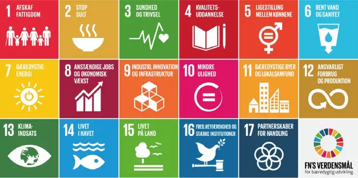</figure><p class="para"><span class="sentence">FN’s 17 verdensmål.<button class="speak" type="button" data-text="FN’s 17 verdensmål." title="Ouvir esta frase" aria-label="Ouvir esta frase">🔊</button></span> </p><div class="page">Side 134</div><h3 id="s134-7">4.3.2 INTERNATIONALT SAMARBEJDE OM UDVIKLING</h3><p class="para"><span class="sentence">Danmark yder økonomisk støtte til mange af verdens fattigste lande.<button class="speak" type="button" data-text="Danmark yder økonomisk støtte til mange af verdens fattigste lande." title="Ouvir esta frase" aria-label="Ouvir esta frase">🔊</button></span> <span class="sentence">Denne støtte kaldes internationalt udviklingssamarbejde.<button class="speak" type="button" data-text="Denne støtte kaldes internationalt udviklingssamarbejde." title="Ouvir esta frase" aria-label="Ouvir esta frase">🔊</button></span> <span class="sentence">Danmark er et ud af få lande i verden, som opfylder FN’s målsætning om, at lande skal give 0,7 procent af bruttonationalindkomsten (BNI) i udviklingsbistand.<button class="speak" type="button" data-text="Danmark er et ud af få lande i verden, som opfylder FN’s målsætning om, at lande skal give 0,7 procent af bruttonationalindkomsten (BNI) i udviklingsbistand." title="Ouvir esta frase" aria-label="Ouvir esta frase">🔊</button></span> <span class="sentence">I 2026 svarer det til cirka 23 milliarder kroner.<button class="speak" type="button" data-text="I 2026 svarer det til cirka 23 milliarder kroner." title="Ouvir esta frase" aria-label="Ouvir esta frase">🔊</button></span> </p><p class="para"><span class="sentence">Målsætningerne med den danske bistand er for eksempel at bekæmpe fattigdom, skabe jobs, handel og investeringer, hjælpe med den grønne omstil ling, bekæmpe korruption, fremme demokrati og menneskerettigheder samt kvinders og pigers rettigheder.<button class="speak" type="button" data-text="Målsætningerne med den danske bistand er for eksempel at bekæmpe fattigdom, skabe jobs, handel og investeringer, hjælpe med den grønne omstil ling, bekæmpe korruption, fremme demokrati og menneskerettigheder samt kvinders og pigers rettigheder." title="Ouvir esta frase" aria-label="Ouvir esta frase">🔊</button></span> </p><p class="para"><span class="sentence">Noget af den danske udviklingsbistand gives som direkte bistand til udviklings landene.<button class="speak" type="button" data-text="Noget af den danske udviklingsbistand gives som direkte bistand til udviklings landene." title="Ouvir esta frase" aria-label="Ouvir esta frase">🔊</button></span> <span class="sentence">Danmark giver for eksempel penge direkte til udviklingslandene, til humanitært arbejde og til det arbejde, civilsamfundsorganisationer udfører.<button class="speak" type="button" data-text="Danmark giver for eksempel penge direkte til udviklingslandene, til humanitært arbejde og til det arbejde, civilsamfundsorganisationer udfører." title="Ouvir esta frase" aria-label="Ouvir esta frase">🔊</button></span> <span class="sentence">Danmark giver derudover bistand i form af bidrag til internationale organisa tioner såsom EU, FN og Verdensbanken.<button class="speak" type="button" data-text="Danmark giver derudover bistand i form af bidrag til internationale organisa tioner såsom EU, FN og Verdensbanken." title="Ouvir esta frase" aria-label="Ouvir esta frase">🔊</button></span> <span class="sentence">En del af pengene i 2026 gives også til at hjælpe Ukraine med humanitær hjælp og genopbygning af landet.<button class="speak" type="button" data-text="En del af pengene i 2026 gives også til at hjælpe Ukraine med humanitær hjælp og genopbygning af landet." title="Ouvir esta frase" aria-label="Ouvir esta frase">🔊</button></span> </p><p class="para"><span class="sentence">Siden 1971 har Danida været ansvarlig for den danske udviklingspolitik.<button class="speak" type="button" data-text="Siden 1971 har Danida været ansvarlig for den danske udviklingspolitik." title="Ouvir esta frase" aria-label="Ouvir esta frase">🔊</button></span> <span class="sentence">Danida er en selvstændig afdeling under Udenrigsministeriet.<button class="speak" type="button" data-text="Danida er en selvstændig afdeling under Udenrigsministeriet." title="Ouvir esta frase" aria-label="Ouvir esta frase">🔊</button></span> <span class="sentence">På de danske ambas sader og repræsentationer i udlandet sidder både lokale og danske udsendte medarbejdere, som håndterer udviklingssamarbejdet med det enkelte land.<button class="speak" type="button" data-text="På de danske ambas sader og repræsentationer i udlandet sidder både lokale og danske udsendte medarbejdere, som håndterer udviklingssamarbejdet med det enkelte land." title="Ouvir esta frase" aria-label="Ouvir esta frase">🔊</button></span> </p><h3>FOKUS PÅ AFRIKA</h3><p class="para"><span class="sentence">Afrika er den verdensdel, der historisk har haft størst fokus i dansk udviklings politik, og som har modtaget størstedelen af dansk udviklingsbistand.<button class="speak" type="button" data-text="Afrika er den verdensdel, der historisk har haft størst fokus i dansk udviklings politik, og som har modtaget størstedelen af dansk udviklingsbistand." title="Ouvir esta frase" aria-label="Ouvir esta frase">🔊</button></span> </p><p class="para"><span class="sentence">Det hænger blandt andet sammen med, at Afrika er nabo til Europa, og at det, der sker i Afrika, kan have stor betydning for Europa (og dermed for Danmark).<button class="speak" type="button" data-text="Det hænger blandt andet sammen med, at Afrika er nabo til Europa, og at det, der sker i Afrika, kan have stor betydning for Europa (og dermed for Danmark)." title="Ouvir esta frase" aria-label="Ouvir esta frase">🔊</button></span> <span class="sentence">Der er stor forskel mellem de 54 afrikanske lande, men samlet set er Afrika verdens fattigste kontinent, og flere steder er der borgerkrige og andre konflikter.<button class="speak" type="button" data-text="Der er stor forskel mellem de 54 afrikanske lande, men samlet set er Afrika verdens fattigste kontinent, og flere steder er der borgerkrige og andre konflikter." title="Ouvir esta frase" aria-label="Ouvir esta frase">🔊</button></span> </p><p class="para"><span class="sentence">Og befolkningen vokser hurtigt og med det også Afrikas betydning.<button class="speak" type="button" data-text="Og befolkningen vokser hurtigt og med det også Afrikas betydning." title="Ouvir esta frase" aria-label="Ouvir esta frase">🔊</button></span> <span class="sentence">Afrikas befolkningstal er næsten fordoblet de sidste 25 år fra 835 mio.<button class="speak" type="button" data-text="Afrikas befolkningstal er næsten fordoblet de sidste 25 år fra 835 mio." title="Ouvir esta frase" aria-label="Ouvir esta frase">🔊</button></span> <span class="sentence">i 2001 til 1,6 mia.<button class="speak" type="button" data-text="i 2001 til 1,6 mia." title="Ouvir esta frase" aria-label="Ouvir esta frase">🔊</button></span> <span class="sentence">i 2026.<button class="speak" type="button" data-text="i 2026." title="Ouvir esta frase" aria-label="Ouvir esta frase">🔊</button></span> <span class="sentence">Frem mod 2050 ventes ifølge FN en yderligere befolkningstilvækst på næsten 1 mia.<button class="speak" type="button" data-text="Frem mod 2050 ventes ifølge FN en yderligere befolkningstilvækst på næsten 1 mia." title="Ouvir esta frase" aria-label="Ouvir esta frase">🔊</button></span> <span class="sentence">til i alt 2,5 mia.<button class="speak" type="button" data-text="til i alt 2,5 mia." title="Ouvir esta frase" aria-label="Ouvir esta frase">🔊</button></span> <span class="sentence">Det skaber på den ene side mulighed for mere økonomisk vækst, mere samhandel og flere investeringer, men øger også risiko for større problemer med klimaforandringer og fattigdom, som også kan føre til, at flere flygter eller migrerer – og nogle mod Europa via de livsfarlige ruter over Middelhavet.<button class="speak" type="button" data-text="Det skaber på den ene side mulighed for mere økonomisk vækst, mere samhandel og flere investeringer, men øger også risiko for større problemer med klimaforandringer og fattigdom, som også kan føre til, at flere flygter eller migrerer – og nogle mod Europa via de livsfarlige ruter over Middelhavet." title="Ouvir esta frase" aria-label="Ouvir esta frase">🔊</button></span> <span class="sentence">Der blev i 2024 registreret cirka 130.000 ulovlige ankomster fra Afrika til Europa.<button class="speak" type="button" data-text="Der blev i 2024 registreret cirka 130.000 ulovlige ankomster fra Afrika til Europa." title="Ouvir esta frase" aria-label="Ouvir esta frase">🔊</button></span> </p><div class="page">Side 135</div><p class="para"><span class="sentence">Den gennemsnitlige afrikaner udleder langt færre af de drivhusgasser, som er hovedårsagen til klimaforandringerne end for eksempel den gennemsnitlige amerikaners, kinesers eller europæers.<button class="speak" type="button" data-text="Den gennemsnitlige afrikaner udleder langt færre af de drivhusgasser, som er hovedårsagen til klimaforandringerne end for eksempel den gennemsnitlige amerikaners, kinesers eller europæers." title="Ouvir esta frase" aria-label="Ouvir esta frase">🔊</button></span> <span class="sentence">Men Afrikas udledning ventes at vokse de kommende årtier.<button class="speak" type="button" data-text="Men Afrikas udledning ventes at vokse de kommende årtier." title="Ouvir esta frase" aria-label="Ouvir esta frase">🔊</button></span> <span class="sentence">Og i alle tilfælde er det i Afrika, at man mærker nogle af de værste konsekvenser af klimaforandringerne i form af for eksempel oversvøm melser, ekstrem varme, misvækst i landbruget og flere områder med ørken.<button class="speak" type="button" data-text="Og i alle tilfælde er det i Afrika, at man mærker nogle af de værste konsekvenser af klimaforandringerne i form af for eksempel oversvøm melser, ekstrem varme, misvækst i landbruget og flere områder med ørken." title="Ouvir esta frase" aria-label="Ouvir esta frase">🔊</button></span> </p><p class="para"><span class="sentence">Et tættere samarbejde mellem de europæiske og afrikanske lande skal derfor blandt andet sikre, at Europa bliver den foretrukne partner og ikke mister poli tisk indflydelse.<button class="speak" type="button" data-text="Et tættere samarbejde mellem de europæiske og afrikanske lande skal derfor blandt andet sikre, at Europa bliver den foretrukne partner og ikke mister poli tisk indflydelse." title="Ouvir esta frase" aria-label="Ouvir esta frase">🔊</button></span> </p><p class="para"><span class="sentence">Den danske regering har i 2024 fremlagt en ny og samlet &#x27;Strategi for et styrket dansk engagement med de afrikanske lande&#x27;.<button class="speak" type="button" data-text="Den danske regering har i 2024 fremlagt en ny og samlet &#x27;Strategi for et styrket dansk engagement med de afrikanske lande&#x27;." title="Ouvir esta frase" aria-label="Ouvir esta frase">🔊</button></span> <span class="sentence">Den lægger op til, at Danmark engagerer sig mere i Afrika og fokuserer også på at skabe ligeværdige partner skaber med de afrikanske lande.<button class="speak" type="button" data-text="Den lægger op til, at Danmark engagerer sig mere i Afrika og fokuserer også på at skabe ligeværdige partner skaber med de afrikanske lande." title="Ouvir esta frase" aria-label="Ouvir esta frase">🔊</button></span> <span class="sentence">Med strategien fortsættes støtten, samtidig med at der rettes fokus på fred og sikkerhed, kampen mod klimaforandringer og bedre muligheder for investeringer i afrikanske lande, økonomisk vækst og mere samhandel med danske virksomheder.<button class="speak" type="button" data-text="Med strategien fortsættes støtten, samtidig med at der rettes fokus på fred og sikkerhed, kampen mod klimaforandringer og bedre muligheder for investeringer i afrikanske lande, økonomisk vækst og mere samhandel med danske virksomheder." title="Ouvir esta frase" aria-label="Ouvir esta frase">🔊</button></span> <span class="sentence">Andre formål er også at skabe mere udveksling af kultur og uddannelse og reducere antallet af ulovlige migranter mod Europa.<button class="speak" type="button" data-text="Andre formål er også at skabe mere udveksling af kultur og uddannelse og reducere antallet af ulovlige migranter mod Europa." title="Ouvir esta frase" aria-label="Ouvir esta frase">🔊</button></span> </p><figure>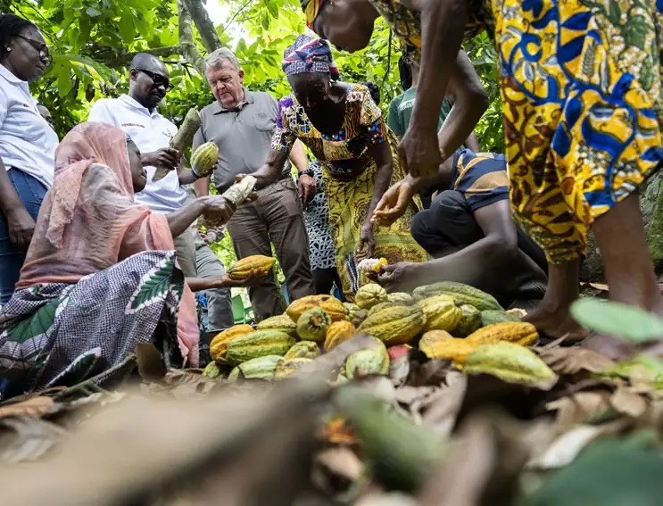</figure><p class="para"><span class="sentence">Udenrigsminister Lars Løkke Rasmussen besøger en kakao-plantage i Ghana.<button class="speak" type="button" data-text="Udenrigsminister Lars Løkke Rasmussen besøger en kakao-plantage i Ghana." title="Ouvir esta frase" aria-label="Ouvir esta frase">🔊</button></span> <span class="sentence">Foto: Finn Frandsen/Ritzau Scanpix.<button class="speak" type="button" data-text="Foto: Finn Frandsen/Ritzau Scanpix." title="Ouvir esta frase" aria-label="Ouvir esta frase">🔊</button></span> </p><div class="page">Side 136</div><h2 id="s136-8">4.4 DANMARKS UDENRIGS- OG SIKKERHEDSPOLITIK</h2><p class="para"><span class="sentence">Selv om Danmark med sin indtræden i NATO i 1949 opgav sin traditionelle neutralitet, holdt Danmark relativt lav militær profil frem til Den Kolde Krigs afslutning omkring 1990.<button class="speak" type="button" data-text="Selv om Danmark med sin indtræden i NATO i 1949 opgav sin traditionelle neutralitet, holdt Danmark relativt lav militær profil frem til Den Kolde Krigs afslutning omkring 1990." title="Ouvir esta frase" aria-label="Ouvir esta frase">🔊</button></span> <span class="sentence">Danmark deltog dog i mange af FN’s fredsbevarende missioner.<button class="speak" type="button" data-text="Danmark deltog dog i mange af FN’s fredsbevarende missioner." title="Ouvir esta frase" aria-label="Ouvir esta frase">🔊</button></span> <span class="sentence">Opgaven her var typisk dels at hjælpe med at sikre, at en våbenhvile blev overholdt og dels at beskytte civilbefolkningen.<button class="speak" type="button" data-text="Opgaven her var typisk dels at hjælpe med at sikre, at en våbenhvile blev overholdt og dels at beskytte civilbefolkningen." title="Ouvir esta frase" aria-label="Ouvir esta frase">🔊</button></span> </p><h3 id="s136-9">4.4.1 UDENRIGSPOLITISK AKTIVISME EFTER DEN KOLDE KRIG (1990-2022)</h3><p class="para"><span class="sentence">Efter Den Kolde Krigs afslutning ændrede NATO’s mål sig gradvist.<button class="speak" type="button" data-text="Efter Den Kolde Krigs afslutning ændrede NATO’s mål sig gradvist." title="Ouvir esta frase" aria-label="Ouvir esta frase">🔊</button></span> <span class="sentence">NATO forblev en forsvarsalliance.<button class="speak" type="button" data-text="NATO forblev en forsvarsalliance." title="Ouvir esta frase" aria-label="Ouvir esta frase">🔊</button></span> <span class="sentence">Men målet blev også i stigende grad at fremme fred, demo krati, menneskerettigheder og retsstatsprincipper rundt om i verden.<button class="speak" type="button" data-text="Men målet blev også i stigende grad at fremme fred, demo krati, menneskerettigheder og retsstatsprincipper rundt om i verden." title="Ouvir esta frase" aria-label="Ouvir esta frase">🔊</button></span> </p><p class="para"><span class="sentence">I den forbindelse spillede det en stor rolle, at NATO efter Den Kolde Krigs ophør har været verdens klart stærkeste militære og sikkerhedspolitiske alliance.<button class="speak" type="button" data-text="I den forbindelse spillede det en stor rolle, at NATO efter Den Kolde Krigs ophør har været verdens klart stærkeste militære og sikkerhedspolitiske alliance." title="Ouvir esta frase" aria-label="Ouvir esta frase">🔊</button></span> <span class="sentence">NATO – anført af USA – var således mindre bekymret for at blive angrebet eller komme i væbnet konflikt med andre lande.<button class="speak" type="button" data-text="NATO – anført af USA – var således mindre bekymret for at blive angrebet eller komme i væbnet konflikt med andre lande." title="Ouvir esta frase" aria-label="Ouvir esta frase">🔊</button></span> </p><p class="para"><span class="sentence">Og Danmark udviklede i forlængelse heraf lidt efter lidt en såkaldt &#x27;aktivistisk udenrigspolitik&#x27;.<button class="speak" type="button" data-text="Og Danmark udviklede i forlængelse heraf lidt efter lidt en såkaldt &#x27;aktivistisk udenrigspolitik&#x27;." title="Ouvir esta frase" aria-label="Ouvir esta frase">🔊</button></span> <span class="sentence">Det betød, at Danmark begyndte at deltage mere aktivt i inter nationale konflikter, som gik ud over fredsbevarende missioner.<button class="speak" type="button" data-text="Det betød, at Danmark begyndte at deltage mere aktivt i inter nationale konflikter, som gik ud over fredsbevarende missioner." title="Ouvir esta frase" aria-label="Ouvir esta frase">🔊</button></span> <span class="sentence">Dette kom til udtryk på forskellig vis.<button class="speak" type="button" data-text="Dette kom til udtryk på forskellig vis." title="Ouvir esta frase" aria-label="Ouvir esta frase">🔊</button></span> </p><p class="para"><span class="sentence">I 1990-91 besatte Irak nabolandet Kuwait.<button class="speak" type="button" data-text="I 1990-91 besatte Irak nabolandet Kuwait." title="Ouvir esta frase" aria-label="Ouvir esta frase">🔊</button></span> <span class="sentence">På baggrund af en FN-beslutning ledte USA en militær indsats, der skulle befri Kuwait.<button class="speak" type="button" data-text="På baggrund af en FN-beslutning ledte USA en militær indsats, der skulle befri Kuwait." title="Ouvir esta frase" aria-label="Ouvir esta frase">🔊</button></span> <span class="sentence">Danmark sendte et krigsskib af sted som et bidrag til den internationale militære styrke.<button class="speak" type="button" data-text="Danmark sendte et krigsskib af sted som et bidrag til den internationale militære styrke." title="Ouvir esta frase" aria-label="Ouvir esta frase">🔊</button></span> <span class="sentence">Skibet deltog dog ikke i aktive kamphandlinger, men havde til opgave at håndhæve det internationale samfunds handelsblokade over for Irak.<button class="speak" type="button" data-text="Skibet deltog dog ikke i aktive kamphandlinger, men havde til opgave at håndhæve det internationale samfunds handelsblokade over for Irak." title="Ouvir esta frase" aria-label="Ouvir esta frase">🔊</button></span> </p><p class="para"><span class="sentence">I forbindelse med borgerkrigen i Jugoslavien i begyndelsen af 1990’erne blev danske soldater sendt ud som en del af FN’s styrker.<button class="speak" type="button" data-text="I forbindelse med borgerkrigen i Jugoslavien i begyndelsen af 1990’erne blev danske soldater sendt ud som en del af FN’s styrker." title="Ouvir esta frase" aria-label="Ouvir esta frase">🔊</button></span> <span class="sentence">Her blev de involveret i direkte kamphandlinger med serbiske styrker i Bosnien i 1994.<button class="speak" type="button" data-text="Her blev de involveret i direkte kamphandlinger med serbiske styrker i Bosnien i 1994." title="Ouvir esta frase" aria-label="Ouvir esta frase">🔊</button></span> </p><div class="page">Side 137</div><p class="para"><span class="sentence">Også i Kosovo, som dengang var en provins i Serbien, var der borgerkrig i slut ningen af 1990’erne.<button class="speak" type="button" data-text="Også i Kosovo, som dengang var en provins i Serbien, var der borgerkrig i slut ningen af 1990’erne." title="Ouvir esta frase" aria-label="Ouvir esta frase">🔊</button></span> <span class="sentence">Her blev det albanske befolkningsflertal udsat for overgreb fra den serbiske regering.<button class="speak" type="button" data-text="Her blev det albanske befolkningsflertal udsat for overgreb fra den serbiske regering." title="Ouvir esta frase" aria-label="Ouvir esta frase">🔊</button></span> <span class="sentence">Efter lange forhandlinger uden resultat greb NATO militært ind i 1999.<button class="speak" type="button" data-text="Efter lange forhandlinger uden resultat greb NATO militært ind i 1999." title="Ouvir esta frase" aria-label="Ouvir esta frase">🔊</button></span> <span class="sentence">Her deltog danske kampfly i NATO’s aktioner.<button class="speak" type="button" data-text="Her deltog danske kampfly i NATO’s aktioner." title="Ouvir esta frase" aria-label="Ouvir esta frase">🔊</button></span> </p><figure>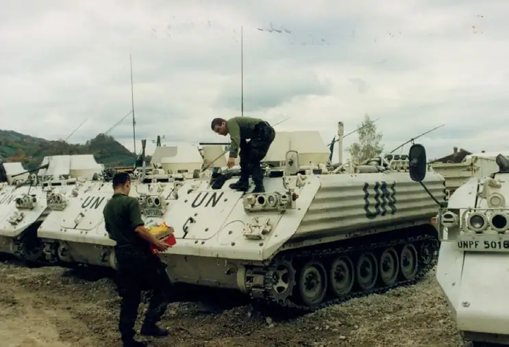</figure><p class="para"><span class="sentence">Danske FN-styrker i Bosnien.<button class="speak" type="button" data-text="Danske FN-styrker i Bosnien." title="Ouvir esta frase" aria-label="Ouvir esta frase">🔊</button></span> </p><h3 id="s137-10">4.4.2 INDSATSER EFTER TERRORANGREBET PÅ USA I 2001</h3><p class="para"><span class="sentence">Et vendepunkt for sikkerhedspolitikken i NATO-alliancen og herunder Danmark var terrorangrebet på USA 11.<button class="speak" type="button" data-text="Et vendepunkt for sikkerhedspolitikken i NATO-alliancen og herunder Danmark var terrorangrebet på USA 11." title="Ouvir esta frase" aria-label="Ouvir esta frase">🔊</button></span> <span class="sentence">september 2001.<button class="speak" type="button" data-text="september 2001." title="Ouvir esta frase" aria-label="Ouvir esta frase">🔊</button></span> <span class="sentence">Her slog terrorister omkring 3.000 mennesker ihjel ved at kapre passagerfly og flyve dem ind i blandt andet ”World Trade Center” i New York.<button class="speak" type="button" data-text="Her slog terrorister omkring 3.000 mennesker ihjel ved at kapre passagerfly og flyve dem ind i blandt andet ”World Trade Center” i New York." title="Ouvir esta frase" aria-label="Ouvir esta frase">🔊</button></span> <span class="sentence">Efter dette terrorangreb blev bekæmpelse af terrorisme en vigtig opgave for alliancen.<button class="speak" type="button" data-text="Efter dette terrorangreb blev bekæmpelse af terrorisme en vigtig opgave for alliancen." title="Ouvir esta frase" aria-label="Ouvir esta frase">🔊</button></span> </p><p class="para"><span class="sentence">Efter terrorangrebet tog NATO et nyt skridt og besluttede at styrke sin evne til at bekæmpe enhver trussel mod medlemslandenes befolkninger, territorier og militære styrker.<button class="speak" type="button" data-text="Efter terrorangrebet tog NATO et nyt skridt og besluttede at styrke sin evne til at bekæmpe enhver trussel mod medlemslandenes befolkninger, territorier og militære styrker." title="Ouvir esta frase" aria-label="Ouvir esta frase">🔊</button></span> <span class="sentence">Dette gjaldt også terrortrusler fra terrorgrupper.<button class="speak" type="button" data-text="Dette gjaldt også terrortrusler fra terrorgrupper." title="Ouvir esta frase" aria-label="Ouvir esta frase">🔊</button></span> <span class="sentence">Danmark har således siden 2001 deltaget i militære missioner rundt omkring i verden, der har haft fokus på disse målsætninger.<button class="speak" type="button" data-text="Danmark har således siden 2001 deltaget i militære missioner rundt omkring i verden, der har haft fokus på disse målsætninger." title="Ouvir esta frase" aria-label="Ouvir esta frase">🔊</button></span> </p><p class="para"><span class="sentence">Terrororganisationen Al Qaeda, der stod bag angrebet på USA 11.<button class="speak" type="button" data-text="Terrororganisationen Al Qaeda, der stod bag angrebet på USA 11." title="Ouvir esta frase" aria-label="Ouvir esta frase">🔊</button></span> <span class="sentence">september 2001, havde base i Afghanistan.<button class="speak" type="button" data-text="september 2001, havde base i Afghanistan." title="Ouvir esta frase" aria-label="Ouvir esta frase">🔊</button></span> <span class="sentence">Det gav anledning til, at styrker, ledet af NATO og med mandat fra FN, invaderede landet i oktober 2001 og afsatte den islami stiske Taliban-regering, som samarbejdede med Al Qaeda.<button class="speak" type="button" data-text="Det gav anledning til, at styrker, ledet af NATO og med mandat fra FN, invaderede landet i oktober 2001 og afsatte den islami stiske Taliban-regering, som samarbejdede med Al Qaeda." title="Ouvir esta frase" aria-label="Ouvir esta frase">🔊</button></span> <span class="sentence">I 2002 besluttede et stort flertal i det danske Folketing at sende danske soldater til Afghanistan for at deltage i krigen.<button class="speak" type="button" data-text="I 2002 besluttede et stort flertal i det danske Folketing at sende danske soldater til Afghanistan for at deltage i krigen." title="Ouvir esta frase" aria-label="Ouvir esta frase">🔊</button></span> <span class="sentence">Igennem 20 år førte Taliban guerillakrig mod de internationale styrker og den nye, vestligt støttede afghanske regering.<button class="speak" type="button" data-text="Igennem 20 år førte Taliban guerillakrig mod de internationale styrker og den nye, vestligt støttede afghanske regering." title="Ouvir esta frase" aria-label="Ouvir esta frase">🔊</button></span> </p><div class="page">Side 138</div><p class="para"><span class="sentence">De danske soldater blev blandt andet udstationeret sammen med britiske tropper i den sydlige Helmand-provins, der var en af de mest urolige i landet.<button class="speak" type="button" data-text="De danske soldater blev blandt andet udstationeret sammen med britiske tropper i den sydlige Helmand-provins, der var en af de mest urolige i landet." title="Ouvir esta frase" aria-label="Ouvir esta frase">🔊</button></span> <span class="sentence">I alt 44 danske soldater mistede livet under kampene.<button class="speak" type="button" data-text="I alt 44 danske soldater mistede livet under kampene." title="Ouvir esta frase" aria-label="Ouvir esta frase">🔊</button></span> <span class="sentence">Efter 2014 var de danske udsendte soldaters opgave at træne og støtte afghanerne, så de selv kunne stå for sikkerheden i landet – og siden er de danske og andre landes soldater blevet trukket helt hjem.<button class="speak" type="button" data-text="Efter 2014 var de danske udsendte soldaters opgave at træne og støtte afghanerne, så de selv kunne stå for sikkerheden i landet – og siden er de danske og andre landes soldater blevet trukket helt hjem." title="Ouvir esta frase" aria-label="Ouvir esta frase">🔊</button></span> <span class="sentence">I takt med at de internationale styrker forlod Afghanistan, faldt landets rege ring og hær sammen.<button class="speak" type="button" data-text="I takt med at de internationale styrker forlod Afghanistan, faldt landets rege ring og hær sammen." title="Ouvir esta frase" aria-label="Ouvir esta frase">🔊</button></span> <span class="sentence">I august 2021 generobrede Taliban hovedstaden Kabul og dermed magten i landet.<button class="speak" type="button" data-text="I august 2021 generobrede Taliban hovedstaden Kabul og dermed magten i landet." title="Ouvir esta frase" aria-label="Ouvir esta frase">🔊</button></span> <span class="sentence">Vesten, herunder Danmark, iværksatte en historisk omfattende evakuering af egne diplomater, militære rådgivere samt af afghanere, der havde arbejdet for Vesten som for eksempel tolke under krigen.<button class="speak" type="button" data-text="Vesten, herunder Danmark, iværksatte en historisk omfattende evakuering af egne diplomater, militære rådgivere samt af afghanere, der havde arbejdet for Vesten som for eksempel tolke under krigen." title="Ouvir esta frase" aria-label="Ouvir esta frase">🔊</button></span> </p><p class="para"><span class="sentence">Danske tropper i Afghanistan.<button class="speak" type="button" data-text="Danske tropper i Afghanistan." title="Ouvir esta frase" aria-label="Ouvir esta frase">🔊</button></span> </p><p class="para"><span class="sentence">I 2003 førte USA og en række andre lande krig mod Irak og landets diktator Saddam Hussein.<button class="speak" type="button" data-text="I 2003 førte USA og en række andre lande krig mod Irak og landets diktator Saddam Hussein." title="Ouvir esta frase" aria-label="Ouvir esta frase">🔊</button></span> <span class="sentence">Krigen var begrundet med, at Irak ikke levede op til sine forplig telser til militær nedrustning, som det var blevet pålagt af FN efter Golfkrigen i 1991.<button class="speak" type="button" data-text="Krigen var begrundet med, at Irak ikke levede op til sine forplig telser til militær nedrustning, som det var blevet pålagt af FN efter Golfkrigen i 1991." title="Ouvir esta frase" aria-label="Ouvir esta frase">🔊</button></span> <span class="sentence">Desuden mente USA, at Irak ulovligt have udviklet masseødelæggelses våben.<button class="speak" type="button" data-text="Desuden mente USA, at Irak ulovligt have udviklet masseødelæggelses våben." title="Ouvir esta frase" aria-label="Ouvir esta frase">🔊</button></span> <span class="sentence">Der blev dog aldrig fundet nogen af disse masseødelæggelsesvåben.<button class="speak" type="button" data-text="Der blev dog aldrig fundet nogen af disse masseødelæggelsesvåben." title="Ouvir esta frase" aria-label="Ouvir esta frase">🔊</button></span> <span class="sentence">Denne krig var uden klart mandat fra FN, og det var heller ikke en NATO-mission.<button class="speak" type="button" data-text="Denne krig var uden klart mandat fra FN, og det var heller ikke en NATO-mission." title="Ouvir esta frase" aria-label="Ouvir esta frase">🔊</button></span> <span class="sentence">Krigen blev udført af en alliance af lande med USA i spidsen og med tilslutning fra blandt andet Storbritannien og Danmark.<button class="speak" type="button" data-text="Krigen blev udført af en alliance af lande med USA i spidsen og med tilslutning fra blandt andet Storbritannien og Danmark." title="Ouvir esta frase" aria-label="Ouvir esta frase">🔊</button></span> <span class="sentence">Flere NATO-medlemmer – blandt andet Tyskland, Frankrig og Norge – ønskede ikke at støtte krigen.<button class="speak" type="button" data-text="Flere NATO-medlemmer – blandt andet Tyskland, Frankrig og Norge – ønskede ikke at støtte krigen." title="Ouvir esta frase" aria-label="Ouvir esta frase">🔊</button></span> </p><p class="para"><span class="sentence">I Danmark var det kun et lille flertal i Folketinget, der stemte for Danmarks deltagelse i Irakkrigen.<button class="speak" type="button" data-text="I Danmark var det kun et lille flertal i Folketinget, der stemte for Danmarks deltagelse i Irakkrigen." title="Ouvir esta frase" aria-label="Ouvir esta frase">🔊</button></span> <span class="sentence">Saddam Hussein blev fjernet fra magten i 2003.<button class="speak" type="button" data-text="Saddam Hussein blev fjernet fra magten i 2003." title="Ouvir esta frase" aria-label="Ouvir esta frase">🔊</button></span> <span class="sentence">Herefter skiftede fokus til at genopbygge Irak efter krigen, at skabe bedre levevilkår for irakerne igennem humanitære indsatser og at skabe demokrati.<button class="speak" type="button" data-text="Herefter skiftede fokus til at genopbygge Irak efter krigen, at skabe bedre levevilkår for irakerne igennem humanitære indsatser og at skabe demokrati." title="Ouvir esta frase" aria-label="Ouvir esta frase">🔊</button></span> <span class="sentence">De danske soldater deltog i dette arbejde sammen med soldater fra andre lande.<button class="speak" type="button" data-text="De danske soldater deltog i dette arbejde sammen med soldater fra andre lande." title="Ouvir esta frase" aria-label="Ouvir esta frase">🔊</button></span> <span class="sentence">Dette arbejde har dog været vanskeliggjort af, at fjernelsen af Saddam Hussein udløste en opblussen af flere konflikter i Irak mellem landets forskellige etniske og religiøse grupper, herunder det sunnimuslimske mindretal (som Saddam Hussein kom fra) og det shiamuslimske flertal, som nu fik magten.<button class="speak" type="button" data-text="Dette arbejde har dog været vanskeliggjort af, at fjernelsen af Saddam Hussein udløste en opblussen af flere konflikter i Irak mellem landets forskellige etniske og religiøse grupper, herunder det sunnimuslimske mindretal (som Saddam Hussein kom fra) og det shiamuslimske flertal, som nu fik magten." title="Ouvir esta frase" aria-label="Ouvir esta frase">🔊</button></span> <span class="sentence">Til tider har situationen i Irak lignet borgerkrig.<button class="speak" type="button" data-text="Til tider har situationen i Irak lignet borgerkrig." title="Ouvir esta frase" aria-label="Ouvir esta frase">🔊</button></span> <span class="sentence">I alt døde otte danske soldater i forbindelse med den amerikansk ledede intervention i Irak.<button class="speak" type="button" data-text="I alt døde otte danske soldater i forbindelse med den amerikansk ledede intervention i Irak." title="Ouvir esta frase" aria-label="Ouvir esta frase">🔊</button></span> </p><div class="page">Side 139</div><p class="para"><span class="sentence">I 2011 udbrød et oprør mod Libyens diktator Muammar al-Gadaffi.<button class="speak" type="button" data-text="I 2011 udbrød et oprør mod Libyens diktator Muammar al-Gadaffi." title="Ouvir esta frase" aria-label="Ouvir esta frase">🔊</button></span> <span class="sentence">Oprøret skete samtidig med oprør i flere nabolande, for eksempel Tunesien, Ægypten og Syrien, som blev kendt som &#x27;Det Arabiske Forår&#x27;.<button class="speak" type="button" data-text="Oprøret skete samtidig med oprør i flere nabolande, for eksempel Tunesien, Ægypten og Syrien, som blev kendt som &#x27;Det Arabiske Forår&#x27;." title="Ouvir esta frase" aria-label="Ouvir esta frase">🔊</button></span> <span class="sentence">Et enigt Folketing vedtog, at Danmark kunne deltage i et militært indgreb i Libyen.<button class="speak" type="button" data-text="Et enigt Folketing vedtog, at Danmark kunne deltage i et militært indgreb i Libyen." title="Ouvir esta frase" aria-label="Ouvir esta frase">🔊</button></span> <span class="sentence">Indgrebet skulle – i overensstem melse med mandat fra FN – beskytte civilbefolkningen mod overgreb fra Gadaffi.<button class="speak" type="button" data-text="Indgrebet skulle – i overensstem melse med mandat fra FN – beskytte civilbefolkningen mod overgreb fra Gadaffi." title="Ouvir esta frase" aria-label="Ouvir esta frase">🔊</button></span> <span class="sentence">Danmark leverede fly til aktionen og gennemførte adskillige bombardementer af Gadaffis hær og militære baser.<button class="speak" type="button" data-text="Danmark leverede fly til aktionen og gennemførte adskillige bombardementer af Gadaffis hær og militære baser." title="Ouvir esta frase" aria-label="Ouvir esta frase">🔊</button></span> <span class="sentence">Efterfølgende har Libyen været et ekstremt ustabilt land med svage regeringer, og hvor stridende grupper har været i noget, som bedst kan beskrives som en borgerkrig.<button class="speak" type="button" data-text="Efterfølgende har Libyen været et ekstremt ustabilt land med svage regeringer, og hvor stridende grupper har været i noget, som bedst kan beskrives som en borgerkrig." title="Ouvir esta frase" aria-label="Ouvir esta frase">🔊</button></span> <span class="sentence">Libyen er også blevet udgangs punkt for mange afrikanske migranter, som søger til Europa over Middelhavet.<button class="speak" type="button" data-text="Libyen er også blevet udgangs punkt for mange afrikanske migranter, som søger til Europa over Middelhavet." title="Ouvir esta frase" aria-label="Ouvir esta frase">🔊</button></span> </p><h3 id="s139-11">4.4.3 NYT FOKUS PÅ DANSK TERRITORIALFORSVAR (2022- )</h3><p class="para"><span class="sentence">I de seneste år har USA og dets allierede igen vendt blikket væk fra at fremme fred, demokrati, menneskerettigheder og retsstatsprincipper rundt om i verden via militære aktioner.<button class="speak" type="button" data-text="I de seneste år har USA og dets allierede igen vendt blikket væk fra at fremme fred, demokrati, menneskerettigheder og retsstatsprincipper rundt om i verden via militære aktioner." title="Ouvir esta frase" aria-label="Ouvir esta frase">🔊</button></span> <span class="sentence">Det skyldes blandt andet den begrænsede succes med operationerne i for eksempel Irak, Afghanistan og Libyen, hvor det på langt sigt ikke lykkedes at opnå målsætningerne om at skabe fred og indsætte demokra tiske regeringer, som støtter Vesten.<button class="speak" type="button" data-text="Det skyldes blandt andet den begrænsede succes med operationerne i for eksempel Irak, Afghanistan og Libyen, hvor det på langt sigt ikke lykkedes at opnå målsætningerne om at skabe fred og indsætte demokra tiske regeringer, som støtter Vesten." title="Ouvir esta frase" aria-label="Ouvir esta frase">🔊</button></span> </p><p class="para"><span class="sentence">Og ikke mindre væsentligt er der igen meget større fokus på et solidt og effektivt territorialforsvar.<button class="speak" type="button" data-text="Og ikke mindre væsentligt er der igen meget større fokus på et solidt og effektivt territorialforsvar." title="Ouvir esta frase" aria-label="Ouvir esta frase">🔊</button></span> <span class="sentence">Det vil sige evnen til at kunne forsvare sit eget territorium mod et angreb fra andre lande.<button class="speak" type="button" data-text="Det vil sige evnen til at kunne forsvare sit eget territorium mod et angreb fra andre lande." title="Ouvir esta frase" aria-label="Ouvir esta frase">🔊</button></span> </p><p class="para"><span class="sentence">Det skyldes en række forskellige forhold.<button class="speak" type="button" data-text="Det skyldes en række forskellige forhold." title="Ouvir esta frase" aria-label="Ouvir esta frase">🔊</button></span> </p><p class="para"><span class="sentence">Helt afgørende for ønsket om at styrke de europæiske NATO-landes territorial forsvar har været, at forholdet mellem Vesten og Rusland har været præget af stadig flere konflikter de senere år.<button class="speak" type="button" data-text="Helt afgørende for ønsket om at styrke de europæiske NATO-landes territorial forsvar har været, at forholdet mellem Vesten og Rusland har været præget af stadig flere konflikter de senere år." title="Ouvir esta frase" aria-label="Ouvir esta frase">🔊</button></span> </p><p class="para"><span class="sentence">Rusland har givet udtryk for, at det føler sine interesser krænket, fordi de fleste af Ruslands nabolande i Central- og Østeuropa, som var allierede med Rusland (Sovjetunionen) under Den Kolde Krig, siden 1999 er blevet optaget som medlemmer af NATO.<button class="speak" type="button" data-text="Rusland har givet udtryk for, at det føler sine interesser krænket, fordi de fleste af Ruslands nabolande i Central- og Østeuropa, som var allierede med Rusland (Sovjetunionen) under Den Kolde Krig, siden 1999 er blevet optaget som medlemmer af NATO." title="Ouvir esta frase" aria-label="Ouvir esta frase">🔊</button></span> <span class="sentence">Også tre lande i det tidligere Sovjetunionen – Estland, Letland og Litauen – er kommet med i NATO.<button class="speak" type="button" data-text="Også tre lande i det tidligere Sovjetunionen – Estland, Letland og Litauen – er kommet med i NATO." title="Ouvir esta frase" aria-label="Ouvir esta frase">🔊</button></span> <span class="sentence">Omvendt er fra NATO&#x27;s side under streget, at landene er frie til at søge om optagelse i forsvarsalliancen.<button class="speak" type="button" data-text="Omvendt er fra NATO&#x27;s side under streget, at landene er frie til at søge om optagelse i forsvarsalliancen." title="Ouvir esta frase" aria-label="Ouvir esta frase">🔊</button></span> <span class="sentence">Desuden blev Warszawa-pagten og Sovjetunionen opløst (i 1991) med Ruslands egen accept.<button class="speak" type="button" data-text="Desuden blev Warszawa-pagten og Sovjetunionen opløst (i 1991) med Ruslands egen accept." title="Ouvir esta frase" aria-label="Ouvir esta frase">🔊</button></span> </p><p class="para"><span class="sentence">De øgede spændinger har stor betydning for Danmarks sikkerhedspolitiske situation.<button class="speak" type="button" data-text="De øgede spændinger har stor betydning for Danmarks sikkerhedspolitiske situation." title="Ouvir esta frase" aria-label="Ouvir esta frase">🔊</button></span> <span class="sentence">Det skyldes ikke mindst, at Danmark er placeret ved Østersøen, som både NATO og Rusland betragter som et væsentligt interesseområde.<button class="speak" type="button" data-text="Det skyldes ikke mindst, at Danmark er placeret ved Østersøen, som både NATO og Rusland betragter som et væsentligt interesseområde." title="Ouvir esta frase" aria-label="Ouvir esta frase">🔊</button></span> <span class="sentence">Rusland har blandt andet truet med at angribe de tre baltiske lande Estland, Letland og Litauen.<button class="speak" type="button" data-text="Rusland har blandt andet truet med at angribe de tre baltiske lande Estland, Letland og Litauen." title="Ouvir esta frase" aria-label="Ouvir esta frase">🔊</button></span> <span class="sentence">Og Forsvarets Efterretningstjeneste vurderer eksempelvis, at det er meget sandsynligt, at Rusland står bag forstyrrelse af navigationssignaler (GPS) over Østersøen.<button class="speak" type="button" data-text="Og Forsvarets Efterretningstjeneste vurderer eksempelvis, at det er meget sandsynligt, at Rusland står bag forstyrrelse af navigationssignaler (GPS) over Østersøen." title="Ouvir esta frase" aria-label="Ouvir esta frase">🔊</button></span> </p><div class="page">Side 140</div><p class="para"><span class="sentence">Siden 2014 har Rusland holdt halvøen Krim i Ukraine besat, ligesom Rusland har sendt våben og soldater til at støtte pro-russiske oprøreres kamp for at løsrive dele af det østlige Ukraine.<button class="speak" type="button" data-text="Siden 2014 har Rusland holdt halvøen Krim i Ukraine besat, ligesom Rusland har sendt våben og soldater til at støtte pro-russiske oprøreres kamp for at løsrive dele af det østlige Ukraine." title="Ouvir esta frase" aria-label="Ouvir esta frase">🔊</button></span> <span class="sentence">Sidst men ikke mindst indledte Rusland i februar 2022 et omfattende militært angreb på Ukraine, der har ført til krig mellem den russiske og ukrainske hær og dermed store ødelæggelser og sendt millioner af ukrainere på flugt.<button class="speak" type="button" data-text="Sidst men ikke mindst indledte Rusland i februar 2022 et omfattende militært angreb på Ukraine, der har ført til krig mellem den russiske og ukrainske hær og dermed store ødelæggelser og sendt millioner af ukrainere på flugt." title="Ouvir esta frase" aria-label="Ouvir esta frase">🔊</button></span> </p><p class="para"><span class="sentence">Som reaktion herpå har Vesten – herunder Danmark – støttet Ukraine med våben, træning og penge til at forsvare sig mod de russiske angreb.<button class="speak" type="button" data-text="Som reaktion herpå har Vesten – herunder Danmark – støttet Ukraine med våben, træning og penge til at forsvare sig mod de russiske angreb." title="Ouvir esta frase" aria-label="Ouvir esta frase">🔊</button></span> <span class="sentence">I denne sammen hæng er Danmark et af de lande i verden, der har hjulpet Ukraine mest og særligt set i forhold til størrelsen af Danmarks befolkning.<button class="speak" type="button" data-text="I denne sammen hæng er Danmark et af de lande i verden, der har hjulpet Ukraine mest og særligt set i forhold til størrelsen af Danmarks befolkning." title="Ouvir esta frase" aria-label="Ouvir esta frase">🔊</button></span> <span class="sentence">Blandt andet har den danske regering i 2023 besluttet at donere 19 F-16-kampfly til Ukraine og træne piloter fra det ukrainske flyvevåben i at bruge flyene.<button class="speak" type="button" data-text="Blandt andet har den danske regering i 2023 besluttet at donere 19 F-16-kampfly til Ukraine og træne piloter fra det ukrainske flyvevåben i at bruge flyene." title="Ouvir esta frase" aria-label="Ouvir esta frase">🔊</button></span> <span class="sentence">Videre har Vesten forsøgt at svække den russiske økonomi med omfattende økonomiske sanktioner med udelukkelse af russiske banker fra det internationale betalingssystem SWIFT, forbudt salg af en række varer til Rusland samt besluttet at stoppe med at købe russisk olie.<button class="speak" type="button" data-text="Videre har Vesten forsøgt at svække den russiske økonomi med omfattende økonomiske sanktioner med udelukkelse af russiske banker fra det internationale betalingssystem SWIFT, forbudt salg af en række varer til Rusland samt besluttet at stoppe med at købe russisk olie." title="Ouvir esta frase" aria-label="Ouvir esta frase">🔊</button></span> <span class="sentence">Mange vestlige virksomheder har trukket sig ud af Rusland.<button class="speak" type="button" data-text="Mange vestlige virksomheder har trukket sig ud af Rusland." title="Ouvir esta frase" aria-label="Ouvir esta frase">🔊</button></span> </p><p class="para"><span class="sentence">En anden grund til oprustningen er, at USA har været utilfreds med, at de fleste europæiske NATO-lande lod sine forsvarsbudgetter falde en del efter Den Kolde Krigs afslutning.<button class="speak" type="button" data-text="En anden grund til oprustningen er, at USA har været utilfreds med, at de fleste europæiske NATO-lande lod sine forsvarsbudgetter falde en del efter Den Kolde Krigs afslutning." title="Ouvir esta frase" aria-label="Ouvir esta frase">🔊</button></span> <span class="sentence">USA mener derfor, at europæerne har overladt for stor en del af regningen for Europas egen sikkerhed til USA, som brugte langt flere penge på forsvaret.<button class="speak" type="button" data-text="USA mener derfor, at europæerne har overladt for stor en del af regningen for Europas egen sikkerhed til USA, som brugte langt flere penge på forsvaret." title="Ouvir esta frase" aria-label="Ouvir esta frase">🔊</button></span> <span class="sentence">Derfor blev NATO-landene i 2014 enige om, at hvert land skulle bruge to procent af deres bruttonationalprodukt (værdien af et lands samlede produk tion) på forsvaret.<button class="speak" type="button" data-text="Derfor blev NATO-landene i 2014 enige om, at hvert land skulle bruge to procent af deres bruttonationalprodukt (værdien af et lands samlede produk tion) på forsvaret." title="Ouvir esta frase" aria-label="Ouvir esta frase">🔊</button></span> <span class="sentence">Og ambitionerne er vokset siden.<button class="speak" type="button" data-text="Og ambitionerne er vokset siden." title="Ouvir esta frase" aria-label="Ouvir esta frase">🔊</button></span> <span class="sentence">I juni 2025 er målsætningen blevet hævet til fem procent.<button class="speak" type="button" data-text="I juni 2025 er målsætningen blevet hævet til fem procent." title="Ouvir esta frase" aria-label="Ouvir esta frase">🔊</button></span> </p><figure>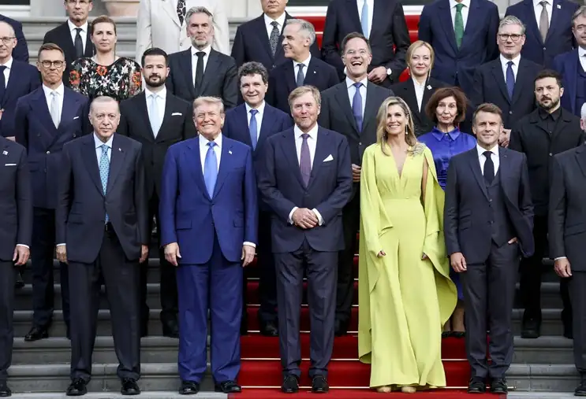</figure><p class="para"><span class="sentence">Stats- og regeringschefer til NATO-topmøde i Haag i Holland, 2025.<button class="speak" type="button" data-text="Stats- og regeringschefer til NATO-topmøde i Haag i Holland, 2025." title="Ouvir esta frase" aria-label="Ouvir esta frase">🔊</button></span> <span class="sentence">Foto: Ritzau Scanpix.<button class="speak" type="button" data-text="Foto: Ritzau Scanpix." title="Ouvir esta frase" aria-label="Ouvir esta frase">🔊</button></span> </p><div class="page">Side 141</div><p class="para"><span class="sentence">Danmark har på den ene side været et af de NATO-lande, som efter Den Kolde Krig har været mest villig til at sende soldater til amerikansk ledede militære operationer i udlandet, for eksempel i Afghanistan og Irak.<button class="speak" type="button" data-text="Danmark har på den ene side været et af de NATO-lande, som efter Den Kolde Krig har været mest villig til at sende soldater til amerikansk ledede militære operationer i udlandet, for eksempel i Afghanistan og Irak." title="Ouvir esta frase" aria-label="Ouvir esta frase">🔊</button></span> </p><p class="para"><span class="sentence">Men omvendt brugte Danmark færre penge på forsvaret.<button class="speak" type="button" data-text="Men omvendt brugte Danmark færre penge på forsvaret." title="Ouvir esta frase" aria-label="Ouvir esta frase">🔊</button></span> <span class="sentence">Eksempelvis faldt Danmarks forsvarsbudget i perioden 1990-2015 fra 2,0 til 1,05 procent af brutto-nationalproduktet – langt under NATO’s målsætning om to procent.<button class="speak" type="button" data-text="Eksempelvis faldt Danmarks forsvarsbudget i perioden 1990-2015 fra 2,0 til 1,05 procent af brutto-nationalproduktet – langt under NATO’s målsætning om to procent." title="Ouvir esta frase" aria-label="Ouvir esta frase">🔊</button></span> <span class="sentence">Og antallet af værnepligtige soldater faldt i samme periode fra cirka 10.500 til 4.300 om året.<button class="speak" type="button" data-text="Og antallet af værnepligtige soldater faldt i samme periode fra cirka 10.500 til 4.300 om året." title="Ouvir esta frase" aria-label="Ouvir esta frase">🔊</button></span> <span class="sentence">Endvidere blev pengene til forsvaret i stigende grad brugt på at kunne sende styrker ud til internationale opgaver frem for at forsvare Danmark.<button class="speak" type="button" data-text="Endvidere blev pengene til forsvaret i stigende grad brugt på at kunne sende styrker ud til internationale opgaver frem for at forsvare Danmark." title="Ouvir esta frase" aria-label="Ouvir esta frase">🔊</button></span> <span class="sentence">Det medførte en klar reduktion i antallet af soldater, samt at mange af forsvarets kaserner, flådestationer, og flyvestationer blev nedlagt.<button class="speak" type="button" data-text="Det medførte en klar reduktion i antallet af soldater, samt at mange af forsvarets kaserner, flådestationer, og flyvestationer blev nedlagt." title="Ouvir esta frase" aria-label="Ouvir esta frase">🔊</button></span> </p><p class="para"><span class="sentence">Desuden ser USA&#x27;s udenrigspolitik ud til at være under forandring.<button class="speak" type="button" data-text="Desuden ser USA&#x27;s udenrigspolitik ud til at være under forandring." title="Ouvir esta frase" aria-label="Ouvir esta frase">🔊</button></span> <span class="sentence">Blandt andet fordi Kinas magt vokser, og USA dermed i stigende grad prioriterer at imødegå konkurrencen fra Kina.<button class="speak" type="button" data-text="Blandt andet fordi Kinas magt vokser, og USA dermed i stigende grad prioriterer at imødegå konkurrencen fra Kina." title="Ouvir esta frase" aria-label="Ouvir esta frase">🔊</button></span> <span class="sentence">Det sker blandt andet ved at flytte flere investeringer og mere militær til Asien og Stillehavet og til USA&#x27;s eget nærområde.<button class="speak" type="button" data-text="Det sker blandt andet ved at flytte flere investeringer og mere militær til Asien og Stillehavet og til USA&#x27;s eget nærområde." title="Ouvir esta frase" aria-label="Ouvir esta frase">🔊</button></span> <span class="sentence">Det skaber usikkerhed om, i hvilket omfang USA fortsat vil deltage i forsvaret af Europa – ikke mindst mod et eventuelt angreb fra Rusland.<button class="speak" type="button" data-text="Det skaber usikkerhed om, i hvilket omfang USA fortsat vil deltage i forsvaret af Europa – ikke mindst mod et eventuelt angreb fra Rusland." title="Ouvir esta frase" aria-label="Ouvir esta frase">🔊</button></span> </p><p class="para"><span class="sentence">Som en følge af krigen i Ukraine, NATO&#x27;s øgede målsætninger og de ændrede prioriteringer i amerikansk udenrigspolitik har Danmark og de andre europæ iske lande besluttet, at der skal bruges langt flere penge på forsvaret fremover, så vi bliver bedre til at forsvare os selv i tilfælde af et angreb.<button class="speak" type="button" data-text="Som en følge af krigen i Ukraine, NATO&#x27;s øgede målsætninger og de ændrede prioriteringer i amerikansk udenrigspolitik har Danmark og de andre europæ iske lande besluttet, at der skal bruges langt flere penge på forsvaret fremover, så vi bliver bedre til at forsvare os selv i tilfælde af et angreb." title="Ouvir esta frase" aria-label="Ouvir esta frase">🔊</button></span> </p><figure>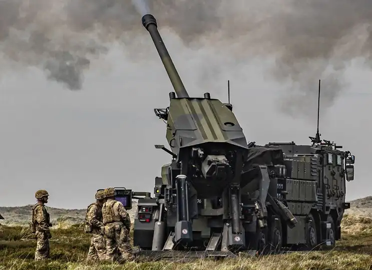</figure><p class="para"><span class="sentence">Genopbygningen af et stærkere forsvar af det danske territorium er en vigtig opgave i disse år.<button class="speak" type="button" data-text="Genopbygningen af et stærkere forsvar af det danske territorium er en vigtig opgave i disse år." title="Ouvir esta frase" aria-label="Ouvir esta frase">🔊</button></span> </p><div class="page">Side 142</div><p class="para"><span class="sentence">De danske forsvarsudgifter er allerede i 2024 nået over to procent af bruttona tionalproduktet.<button class="speak" type="button" data-text="De danske forsvarsudgifter er allerede i 2024 nået over to procent af bruttona tionalproduktet." title="Ouvir esta frase" aria-label="Ouvir esta frase">🔊</button></span> <span class="sentence">Det gælder nu for alle 32 medlemslande i NATO.<button class="speak" type="button" data-text="Det gælder nu for alle 32 medlemslande i NATO." title="Ouvir esta frase" aria-label="Ouvir esta frase">🔊</button></span> <span class="sentence">Sammenlagt har de europæiske NATO-lande øget forsvarsudgifterne fra 1,4 procent af brut tonationalproduktet (BNP) i 2014 til cirka 2,3 procent i 2025.<button class="speak" type="button" data-text="Sammenlagt har de europæiske NATO-lande øget forsvarsudgifterne fra 1,4 procent af brut tonationalproduktet (BNP) i 2014 til cirka 2,3 procent i 2025." title="Ouvir esta frase" aria-label="Ouvir esta frase">🔊</button></span> <span class="sentence">Og der er afsat meget store yderligere beløb i de kommende år, der allerede i 2026 forventes at løfte Danmarks forsvarsudgifter til 3,5 procent af BNP.<button class="speak" type="button" data-text="Og der er afsat meget store yderligere beløb i de kommende år, der allerede i 2026 forventes at løfte Danmarks forsvarsudgifter til 3,5 procent af BNP." title="Ouvir esta frase" aria-label="Ouvir esta frase">🔊</button></span> <span class="sentence">I samme periode er USA&#x27;s forsvarsudgifter faldet fra 3,7 til 3,2 procent af BNP.<button class="speak" type="button" data-text="I samme periode er USA&#x27;s forsvarsudgifter faldet fra 3,7 til 3,2 procent af BNP." title="Ouvir esta frase" aria-label="Ouvir esta frase">🔊</button></span> <span class="sentence">Således er forskellen mellem de amerikanske og de europæiske forsvarsudgifter set i forhold til økonomiernes størrelse blevet betydeligt mindre.<button class="speak" type="button" data-text="Således er forskellen mellem de amerikanske og de europæiske forsvarsudgifter set i forhold til økonomiernes størrelse blevet betydeligt mindre." title="Ouvir esta frase" aria-label="Ouvir esta frase">🔊</button></span> </p><p class="para"><span class="sentence">De øgede økonomiske bevillinger skal blandt andet bruges til at købe mere og nyere materiel som flere kampvogne og kampfly samt undervands-torpedoer og avancerede forsvarssystemer, der kan nedskyde fjendtlige fly og missiler fra jorden.<button class="speak" type="button" data-text="De øgede økonomiske bevillinger skal blandt andet bruges til at købe mere og nyere materiel som flere kampvogne og kampfly samt undervands-torpedoer og avancerede forsvarssystemer, der kan nedskyde fjendtlige fly og missiler fra jorden." title="Ouvir esta frase" aria-label="Ouvir esta frase">🔊</button></span> <span class="sentence">Desuden er det i 2024 besluttet, at der skal indkaldes flere soldater, således at antallet af værnepligtige soldater skal øges til 7.500 (fra ca.<button class="speak" type="button" data-text="Desuden er det i 2024 besluttet, at der skal indkaldes flere soldater, således at antallet af værnepligtige soldater skal øges til 7.500 (fra ca." title="Ouvir esta frase" aria-label="Ouvir esta frase">🔊</button></span> <span class="sentence">5.200 i 2023), og at tjenestetiden for de fleste forlænges fra fire til 11 måneder.<button class="speak" type="button" data-text="5.200 i 2023), og at tjenestetiden for de fleste forlænges fra fire til 11 måneder." title="Ouvir esta frase" aria-label="Ouvir esta frase">🔊</button></span> </p><h3 id="s142-12">4.4.4 RIGSFÆLLESSKABET, GRØNLAND OG ARKTIS I DANSK UDEN RIGSPOLITIK</h3><p class="para"><span class="sentence">Grønland, som er en del af det danske Rigsfællesskab, havde en særlig betyd ning under Den Kolde Krig.<button class="speak" type="button" data-text="Grønland, som er en del af det danske Rigsfællesskab, havde en særlig betyd ning under Den Kolde Krig." title="Ouvir esta frase" aria-label="Ouvir esta frase">🔊</button></span> <span class="sentence">Grønland ligger tæt på både USA og det daværende Sovjetunionen.<button class="speak" type="button" data-text="Grønland ligger tæt på både USA og det daværende Sovjetunionen." title="Ouvir esta frase" aria-label="Ouvir esta frase">🔊</button></span> <span class="sentence">Man skulle i de fleste tilfælde flyve hen over Grønland for at tage den korteste rute mellem USA, Europa og Sovjetunionen.<button class="speak" type="button" data-text="Man skulle i de fleste tilfælde flyve hen over Grønland for at tage den korteste rute mellem USA, Europa og Sovjetunionen." title="Ouvir esta frase" aria-label="Ouvir esta frase">🔊</button></span> <span class="sentence">Den korteste vej for raketter i tilfælde af krig mellem USA og Rusland/Sovjetunionen går også hen over Grønland.<button class="speak" type="button" data-text="Den korteste vej for raketter i tilfælde af krig mellem USA og Rusland/Sovjetunionen går også hen over Grønland." title="Ouvir esta frase" aria-label="Ouvir esta frase">🔊</button></span> <span class="sentence">Det gav øen en stor strategisk betydning i forhold til forsvars samarbejdet.<button class="speak" type="button" data-text="Det gav øen en stor strategisk betydning i forhold til forsvars samarbejdet." title="Ouvir esta frase" aria-label="Ouvir esta frase">🔊</button></span> <span class="sentence">I 1951 underskrev Danmark og USA en aftale om USA’s militære aktiviteter i Grønland.<button class="speak" type="button" data-text="I 1951 underskrev Danmark og USA en aftale om USA’s militære aktiviteter i Grønland." title="Ouvir esta frase" aria-label="Ouvir esta frase">🔊</button></span> <span class="sentence">Samme år gik amerikanerne i gang med at anlægge en stor luftbase ved Qaanaaq (Thule) i det nordlige Grønland.<button class="speak" type="button" data-text="Samme år gik amerikanerne i gang med at anlægge en stor luftbase ved Qaanaaq (Thule) i det nordlige Grønland." title="Ouvir esta frase" aria-label="Ouvir esta frase">🔊</button></span> <span class="sentence">På basen byggede USA også en radarstation, der kunne overvåge luftrummet over Grønland og farvan dene omkring Grønland.<button class="speak" type="button" data-text="På basen byggede USA også en radarstation, der kunne overvåge luftrummet over Grønland og farvan dene omkring Grønland." title="Ouvir esta frase" aria-label="Ouvir esta frase">🔊</button></span> <span class="sentence">Basen var central for luftforsvaret af USA og NATO, og den bruges den dag i dag stadig af USA under navnet Pituffik Space Base.<button class="speak" type="button" data-text="Basen var central for luftforsvaret af USA og NATO, og den bruges den dag i dag stadig af USA under navnet Pituffik Space Base." title="Ouvir esta frase" aria-label="Ouvir esta frase">🔊</button></span> </p><p class="para"><span class="sentence">Det varmere klima og afsmeltningen af isen i og omkring Grønland har øget landets strategiske betydning de seneste år.<button class="speak" type="button" data-text="Det varmere klima og afsmeltningen af isen i og omkring Grønland har øget landets strategiske betydning de seneste år." title="Ouvir esta frase" aria-label="Ouvir esta frase">🔊</button></span> <span class="sentence">I Qaanaaq, nær basen, ligger verdens nordligste dybvands-havn, hvor vandet er dybt nok til, at store skibe kan lægge til.<button class="speak" type="button" data-text="I Qaanaaq, nær basen, ligger verdens nordligste dybvands-havn, hvor vandet er dybt nok til, at store skibe kan lægge til." title="Ouvir esta frase" aria-label="Ouvir esta frase">🔊</button></span> <span class="sentence">Og med det varmere klima og afsmeltningen af isen bliver det i stigende grad muligt at udvinde naturressourcer som sjældne jordarter, uran, olie, gas og mineraler i Grønland, der hidtil har været indefrosset.<button class="speak" type="button" data-text="Og med det varmere klima og afsmeltningen af isen bliver det i stigende grad muligt at udvinde naturressourcer som sjældne jordarter, uran, olie, gas og mineraler i Grønland, der hidtil har været indefrosset." title="Ouvir esta frase" aria-label="Ouvir esta frase">🔊</button></span> <span class="sentence">Hvis havet i Arktis i fremtiden bliver forholdsvis isfrit om sommeren, åbner det også for, at der kan etableres nye, kortere skibs-ruter via Det Arktiske Ocean mellem verdens kontinenter.<button class="speak" type="button" data-text="Hvis havet i Arktis i fremtiden bliver forholdsvis isfrit om sommeren, åbner det også for, at der kan etableres nye, kortere skibs-ruter via Det Arktiske Ocean mellem verdens kontinenter." title="Ouvir esta frase" aria-label="Ouvir esta frase">🔊</button></span> </p><div class="page">Side 143</div><figure>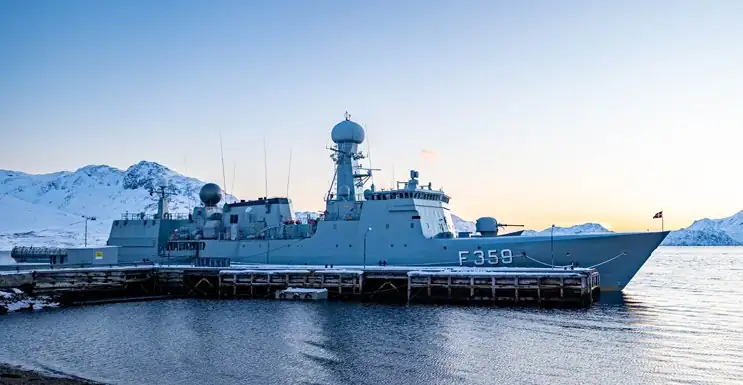</figure><p class="para"><span class="sentence">Det danske inspektionsskib ’Vædderen’ patruljerer ved Grønlands kyst.<button class="speak" type="button" data-text="Det danske inspektionsskib ’Vædderen’ patruljerer ved Grønlands kyst." title="Ouvir esta frase" aria-label="Ouvir esta frase">🔊</button></span> </p><p class="para"><span class="sentence">Det arktiske område er derfor (via Grønland) igen kommet langt mere i centrum for dansk sikkerhedspolitik.<button class="speak" type="button" data-text="Det arktiske område er derfor (via Grønland) igen kommet langt mere i centrum for dansk sikkerhedspolitik." title="Ouvir esta frase" aria-label="Ouvir esta frase">🔊</button></span> </p><p class="para"><span class="sentence">Stormagterne USA, Rusland og Kina er alle interesserede i områderne i Arktis på forskellig vis.<button class="speak" type="button" data-text="Stormagterne USA, Rusland og Kina er alle interesserede i områderne i Arktis på forskellig vis." title="Ouvir esta frase" aria-label="Ouvir esta frase">🔊</button></span> <span class="sentence">Det gør, at Arktis i stigende grad præges af et anspændt forhold mellem disse lande.<button class="speak" type="button" data-text="Det gør, at Arktis i stigende grad præges af et anspændt forhold mellem disse lande." title="Ouvir esta frase" aria-label="Ouvir esta frase">🔊</button></span> <span class="sentence">Det handler både om, at landene har interesse i at beskytte sig selv mod angreb fra andre, og om at landene har stigende økonomiske inte resser i for eksempel minedrift og transport af varer med skib.<button class="speak" type="button" data-text="Det handler både om, at landene har interesse i at beskytte sig selv mod angreb fra andre, og om at landene har stigende økonomiske inte resser i for eksempel minedrift og transport af varer med skib." title="Ouvir esta frase" aria-label="Ouvir esta frase">🔊</button></span> </p><p class="para"><span class="sentence">De seneste år har den amerikanske præsident Donald Trump (født 1946) udtrykt ønske om, at Grønland skal blive en del af USA.<button class="speak" type="button" data-text="De seneste år har den amerikanske præsident Donald Trump (født 1946) udtrykt ønske om, at Grønland skal blive en del af USA." title="Ouvir esta frase" aria-label="Ouvir esta frase">🔊</button></span> <span class="sentence">Dette ønske er dog blevet afvist af både den grønlandske og den danske regering.<button class="speak" type="button" data-text="Dette ønske er dog blevet afvist af både den grønlandske og den danske regering." title="Ouvir esta frase" aria-label="Ouvir esta frase">🔊</button></span> </p><p class="para"><span class="sentence">I Ilulissat-erklæringen fra 2008 har fem arktiske stater – Danmark/Grønland, Norge, USA, Canada og Rusland – dog erklæret sig enige om at samarbejde om fredelige relationer i Arktis.<button class="speak" type="button" data-text="I Ilulissat-erklæringen fra 2008 har fem arktiske stater – Danmark/Grønland, Norge, USA, Canada og Rusland – dog erklæret sig enige om at samarbejde om fredelige relationer i Arktis." title="Ouvir esta frase" aria-label="Ouvir esta frase">🔊</button></span> <span class="sentence">Men erklæringen blev udarbejdet i en helt anden international situation end i dag, idet forholdet mellem nogle af landene er blevet mere anspændt siden 2008.<button class="speak" type="button" data-text="Men erklæringen blev udarbejdet i en helt anden international situation end i dag, idet forholdet mellem nogle af landene er blevet mere anspændt siden 2008." title="Ouvir esta frase" aria-label="Ouvir esta frase">🔊</button></span> </p><p class="para"><span class="sentence">For at styrke samarbejdet om bæredygtig udvikling i de arktiske områder inden for blandt andet miljø, klima, sundhed og søfart blev Arktisk Råd oprettet i 1996.<button class="speak" type="button" data-text="For at styrke samarbejdet om bæredygtig udvikling i de arktiske områder inden for blandt andet miljø, klima, sundhed og søfart blev Arktisk Råd oprettet i 1996." title="Ouvir esta frase" aria-label="Ouvir esta frase">🔊</button></span> <span class="sentence">Rådet har deltagelse af de lande, som har territorier i de arktiske egne.<button class="speak" type="button" data-text="Rådet har deltagelse af de lande, som har territorier i de arktiske egne." title="Ouvir esta frase" aria-label="Ouvir esta frase">🔊</button></span> <span class="sentence">Det vil sige USA, Canada, Rusland og de fem nordiske lande.<button class="speak" type="button" data-text="Det vil sige USA, Canada, Rusland og de fem nordiske lande." title="Ouvir esta frase" aria-label="Ouvir esta frase">🔊</button></span> <span class="sentence">Herudover deltager seks organisationer, som hver især repræsenterer de oprindelige folk, herunder Inuit Circumpolar Council, ICC.<button class="speak" type="button" data-text="Herudover deltager seks organisationer, som hver især repræsenterer de oprindelige folk, herunder Inuit Circumpolar Council, ICC." title="Ouvir esta frase" aria-label="Ouvir esta frase">🔊</button></span> <span class="sentence">Grønland og Færøerne har en stærk selvstændig stemme i Arktisk Råd.<button class="speak" type="button" data-text="Grønland og Færøerne har en stærk selvstændig stemme i Arktisk Råd." title="Ouvir esta frase" aria-label="Ouvir esta frase">🔊</button></span> <span class="sentence">Grønland har en ledende rolle i Kongerigets aktuelle formandskab for Arktisk Råd (2025-2027).<button class="speak" type="button" data-text="Grønland har en ledende rolle i Kongerigets aktuelle formandskab for Arktisk Råd (2025-2027)." title="Ouvir esta frase" aria-label="Ouvir esta frase">🔊</button></span> </p></main></div><script src="assets/app.js"></script></body></html>